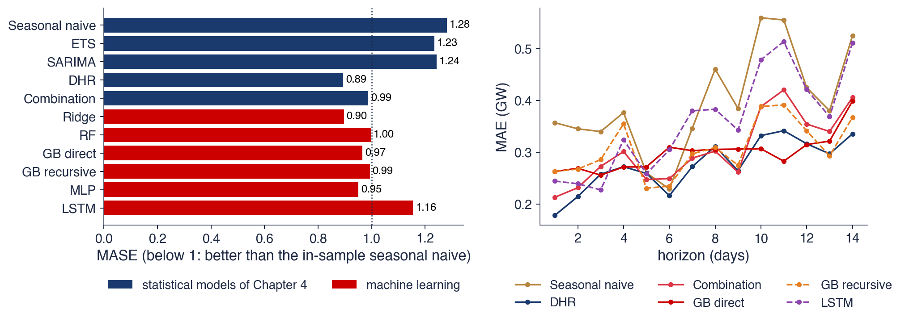

Bucharest University of Economic Studies IDA Institute Digital Assets Blockchain Research Center AI4EFin Artificial Intelligence for Energy Finance Romanian Academy, Institute for Economic Forecasting MSCA Digital Finance
The chapter asks whether flexible learning algorithms, such as random forests, gradient boosting and neural networks, forecast a time series more accurately than ARIMA, ETS and the naive forecast, and how such a claim is checked. Machine learning here means a family of algorithms that learn a prediction rule from examples. For a time series the examples are not given: they have to be built from the past of the series itself, and this construction is the first topic of the chapter.
The route has three stages. The first turns forecasting into supervised learning: lag features, rolling windows, calendar features and the three strategies for multi-step forecasts. The second presents the methods and the way to validate them: walk-forward validation and leakage, ridge and lasso, trees and their ensembles, small neural networks and the LSTM. The third covers prediction intervals, the difference between local and global models, four applications and the M4 and M5 competitions. The chapter builds on the accuracy measures and benchmarks of Chapter 0 and on the time-series cross-validation and the Diebold–Mariano test of Chapter 4.
In brief
Question: can random forests, gradient boosting and neural networks forecast a time series better than ARIMA, ETS and the naive forecast, and how do we check it honestly?
machine learning (ML): algorithms that learn a prediction rule from examples; for time series, the examples are built from the past of the series
Route of the chapter
forecasting as supervised learning: lags, rolling windows, calendar features; recursive, direct and multi-output strategies
walk-forward validation and leakage; ridge and lasso; trees, random forest, gradient boosting; small neural networks and the LSTM
prediction intervals; local and global models; four applications and the M4, M5 competitions
We build on Chapter 0 (accuracy measures, benchmarks) and Chapter 4 (time-series cross-validation, Diebold–Mariano)
The first outcomes concern the data: the reader should be able to turn a series into a supervised-learning table that uses only information available at the forecast origin, and to produce forecasts several steps ahead with the recursive, direct and multi-output strategies. The third outcome is methodological: to validate a model walk-forward and to recognise leakage and look-ahead bias, the two errors that make ML forecasts look better than they are.
The remaining outcomes concern the methods and their evaluation. The reader should be able to explain ridge, lasso, regression trees, random forests, gradient boosting, the multilayer perceptron and the LSTM, together with the parameter that controls the complexity of each; to build prediction intervals by quantile regression and conformal prediction; and to compare ML forecasts with statistical benchmarks on the same test period, using the MASE and the Diebold–Mariano test.
In brief
Turn a time series into a supervised-learning table without using future information
Produce multi-step forecasts with the recursive, direct and multi-output strategies
Validate a model walk-forward and recognise leakage and look-ahead bias
Explain ridge, lasso, regression trees, random forest, gradient boosting, the MLP and the LSTM, with their main tuning parameters
Build prediction intervals by quantile regression and conformal prediction
Compare ML forecasts with statistical benchmarks on the same test period, with MASE and the Diebold–Mariano test
The computations use Python. The scikit-learn library provides every model of the chapter except the LSTM: RidgeCV and LassoCV for penalised regressions, RandomForestRegressor, HistGradientBoostingRegressor, MLPRegressor and TimeSeriesSplit for walk-forward validation. The LSTM is a small network written in PyTorch. The models are kept small, with fixed random seeds, so that every notebook runs on an ordinary processor in Google Colab in a few minutes.
After comparing the post-sample accuracy of popular ML methods with that of eight traditional statistical ones, we found that the former are dominated across both accuracy measures used and for all forecasting horizons examined.
Machine learning (ML) methods such as random forests, gradient boosting and neural networks learn a prediction rule from examples, without a model written down in advance. They dominate image recognition, translation and many prediction tasks on large tabular data sets. The question of this chapter is whether they also forecast time series better than the statistical models of the previous chapters: ARIMA, exponential smoothing (ETS) and dynamic harmonic regression, and even the naive forecast.
The answer depends on the data and on the way the comparison is made. A time series has to be turned into a table of examples before any ML method can use it, and the examples are ordered and dependent. A careless table or a careless validation scheme lets information from the future into the training data, and the resulting scores can look excellent while the model has no forecasting ability. A large part of the chapter is therefore about building the table and validating the model honestly.
The chapter then applies ridge and lasso regressions, regression trees and their ensembles, small neural networks and the LSTM to four problems: the daily electricity load of Romania, Romanian inflation, the volatility of stock indices and the sign of daily returns. The ML forecasts enter the same comparison as the statistical models of Chapter 4, with the same forecast origins, the same accuracy measures and the Diebold–Mariano test. On the electricity load, a ridge regression with calendar features is as accurate as the best statistical model, while the LSTM is clearly less accurate. The landmark M4 and M5 competitions and the study of Gu, Kelly and Xiu (2020) show where ML methods do win: with many related series and rich features.

Daily electricity load of Romania, 26 forecast origins from 30 June 2025 to 15 June 2026, horizons of 1 to 14 days. Left: the mean absolute scaled error (MASE) of five statistical models (blue) and six ML models (red); below 1 means more accurate than the in-sample seasonal naive forecast. Right: the mean absolute error (MAE) in GW by horizon for six models.
What you will be able to do
Build a supervised-learning table of lags, rolling statistics and calendar features from a time series, without future information.
Produce multi-step forecasts with the recursive, direct and multi-output strategies.
Validate a model walk-forward and recognise leakage and look-ahead bias.
Explain ridge, lasso, regression trees, random forests, gradient boosting, the multilayer perceptron and the LSTM, with their tuning parameters.
Construct prediction intervals by quantile regression and split conformal prediction and check their coverage.
Compare ML forecasts with statistical benchmarks on the same test period, with MASE and the Diebold–Mariano test.
SummaryKey ideas, formulas and self-assessment questions.
Forecasting as supervised learning
Supervised learning is the part of machine learning that learns to predict a target from inputs, using examples where both are known. A forecast fits this frame once the series is rewritten as a table: each row holds what was known at a forecast origin and the value that was observed later. The section builds this table, shows it on the daily electricity load of Romania and presents the three ways of producing forecasts more than one step ahead.
Supervised learning starts from \(n\) pairs \((\mathbf{x}_i, y_i)\). The vector \(\mathbf{x}_i\) holds the features, the inputs of the prediction, and \(y_i\) is the target, the quantity to be predicted. The goal is a function \(\hat f\) that predicts well on new data, that is, whose expected loss \(E[L(y, \hat f(\mathbf{x}))]\) is small for pairs not used in training. The loss function decides what "predicts well" means. The squared error \((y - \hat y)^2\) is minimised by the conditional mean of \(y\), so it leads to forecasts of the mean; the absolute error \(|y - \hat y|\) is minimised by the conditional median.
Training chooses \(\hat f\) within a class of functions (linear functions, trees, neural networks) by minimising the average loss on the training data. Each class also has hyperparameters, settings fixed before training: the depth of a tree, the number of trees, the size of a penalty. They cannot be estimated from the training loss, because a more complex model always fits the training data better; they are chosen by validation on data the model has not seen.
Standard machine learning treats the pairs as independent draws from one distribution. The rows of a time-series table are ordered in time and dependent: neighbouring rows share most of their information. The table must therefore be built so that each row uses only the past of its origin, and the validation must keep the order of time. These two requirements shape the rest of the chapter.
In brief
Data: pairs \((\mathbf{x}_i, y_i)\), \(i = 1, \dots, n\); \(\mathbf{x}_i\): the features (inputs), \(y_i\): the target
goal: a function \(\hat f\) with small expected loss \(E[L(y, \hat f(\mathbf{x}))]\) on new data
loss: squared error \(L = (y - \hat y)^2\) (forecasts the mean), absolute error \(|y - \hat y|\) (the median)
Training: choose \(\hat f\) in a class of functions (linear, trees, networks) by minimising the average loss on the training data
hyperparameters: settings fixed before training (tree depth, number of trees, penalty); chosen by validation
Standard ML assumes the pairs are independent; in a time series they are ordered and dependent, so the table and the validation must respect time
The simplest features are lags. At the forecast origin \(t\) the values \(y_t, y_{t-1}, \dots, y_{t-p+1}\) are known, and the target is \(y_{t+h}\), the value \(h\) steps later. An AR(\(p\)) model of Chapter 2 is exactly a linear regression of \(y_{t+1}\) on these lags. Machine learning keeps the table and replaces the linear function by a more flexible one, such as a tree ensemble or a neural network.
Rolling-window features summarise the recent past: means, standard deviations or minima over the last \(w\) values. The 7-day mean, for example, is \(\bar y_t^{(7)} = \frac{1}{7}\sum_{j=0}^{6} y_{t-j}\), the average of the seven values up to and including the origin. The window must end at \(t\). A window that contains \(y_{t+1}\) puts part of the target into the features, an error called leakage that the next section examines in detail.
Calendar features describe the target day: the day of the week, the month, the public holidays and Fourier terms such as \(\sin(2\pi k\,d/365.25)\), where \(d\) is the day of the year and \(k = 1, 2, \dots\) is the harmonic (\(k = 1\) gives one cycle per year). They are known in advance, so they are legitimate inputs, as the Fourier terms and the Orthodox Easter dummy of Chapter 4 were. Exogenous variables such as temperature are allowed only in the form available at the origin: the weather forecast, not the temperature measured later.
In brief
Lag features: \(y_{t}, y_{t-1}, \dots, y_{t-p+1}\), known at the forecast origin \(t\); target \(y_{t+h}\)
an AR\((p)\) (Chapter 2) is exactly a linear regression on this table; ML replaces the linear function by a flexible one
Rolling-window features: means, standard deviations, minima over the last \(w\) values
for example the 7-day mean \(\bar y_t^{(7)} = \frac{1}{7}\sum_{j=0}^{6} y_{t-j}\)
the window must end at \(t\), the origin: a window that contains \(y_{t+1}\) leaks the target
Calendar features of the target day: day of week, month, Fourier terms \(\sin(2\pi k\,d/365.25)\), holidays
\(d\): the day of the year; \(k = 1, 2, \dots\): the harmonic (one annual cycle for \(k = 1\))
known in advance, so allowed (Chapter 4: Fourier terms and Orthodox Easter); exogenous variables (temperature) only if their values are known or forecast at \(t\)
Worked example: a lag table for the electricity load
The table shows six rows built from the daily mean load of Romania, in gigawatts (GW), for the week that ends just before 30 June 2025. The first row has its origin on Monday 23 June: the load that day was 5.80 GW, on Sunday 4.73 GW and on Saturday 5.21 GW, and the target is Tuesday's load, 6.03 GW. Each row is a snapshot of what was known at the origin, paired with the value that the forecast had to predict.
The construction loses a few observations at both ends. With \(p\) lags, the first \(p - 1\) days have no complete row, because some of their lags fall before the start of the series. For horizon \(h\), the last \(h\) days have no observed target. A series of length \(n\) therefore gives \(n - p - h + 1\) complete rows.
The weekday column shows why calendar features matter. The Sunday load is about 1 GW below the working-day load, and the target of the last row, Sunday 29 June, is 5.09 GW after 5.78 GW on Saturday. A model that sees only the lags cannot know that the next day is a Sunday; it needs the weekday of the target day as a feature.
In brief
Origin \(t\)
\(y_t\)
\(y_{t-1}\)
\(y_{t-2}\)
target\(y_{t+1}\)
Mon
5.80
4.73
5.21
6.03
Tue
6.03
5.80
4.73
6.38
Wed
6.38
6.03
5.80
6.61
Thu
6.61
6.38
6.03
6.59
Fri
6.59
6.61
6.38
5.78
Sat
5.78
6.59
6.61
5.09
Daily mean load of Romania (GW), the last days before 30 June 2025
each row: what we knew at \(t\), and the value we want for \(t+1\)
With \(p\) lags, the first \(p - 1\) days have no complete row
a series of length \(n\) gives \(n - p - h + 1\) rows for horizon \(h\)
Weekday column: the Sunday dips are visible; a model needs the weekday of the target day
Question for the room With p = 5 lags and h = 3, how many complete rows do the 9 days give?
Answer
9 − 5 − 3 + 1 = 2 rows, with origins 25 and 26 June 2025. On the whole series the table for h = 3 has 1642 − 28 − 3 + 1 = 1612 rows.
Question for the room Move the horizon to h = 7. What do the correlations of the target with yt and with the 7-day mean become?
Answer
0.81 with yt (0.77 at h = 1) and 0.60 with the 7-day mean (0.74 at h = 1). At h = 7 today is the same weekday as the target, so yt takes the role of the weekly lag, while the 7-day mean carries no weekday.
The top panel shows the daily mean load of Romania from the European Network of Transmission System Operators for Electricity (ENTSO-E), from 1 January 2022 to 30 June 2026, 1,642 days. The red dots mark public holidays. The series combines a weekly cycle, visible as the dense oscillation, an annual cycle with peaks in winter, and sharp drops on holidays, especially around Christmas and Easter.
The three bottom panels plot tomorrow's load \(y_{t+1}\) against three candidate features: today's load \(y_t\), the load on the same weekday of the previous week \(y_{t-6}\) and the 7-day mean at \(t\). Each dot is one row of the table; the orange dots are rows whose target falls on a Sunday and the blue ones targets from Monday to Saturday. A good feature makes the cloud narrow and close to a line.
In brief
Daily mean load of Romania, ENTSO-E (the European Network of Transmission System Operators for Electricity), 1 January 2022–30 June 2026, 1 642 days; bottom: tomorrow's load against three features
The mean load over the sample is 6.18 GW. The minimum, 3.79 GW, occurred on 20 April 2025, the Orthodox Easter Sunday, and the maximum, 8.15 GW, on 13 January 2022, during a winter week. The weekly cycle, the annual cycle of heating and cooling and the holiday drops together form the multiple seasonality studied in Chapter 4.
The correlations measure how much each feature says about tomorrow's load: 0.77 for today's load, 0.82 for the same weekday of the previous week and 0.74 for the 7-day mean. The same-weekday lag is the best single feature because it carries the weekly cycle with it. With today's load alone, the Sunday targets form a separate cloud below the others, so a single linear function of \(y_t\) cannot represent the weekly pattern; a model needs either the weekday or the right lag.
The table used in the rest of the chapter has 1,614 rows and 30 features: 14 lags, two rolling means, the same-weekday value and calendar features (weekday dummies, holiday flags and Fourier terms). The first rows are lost to the 14 lags, which explains why there are fewer rows than days.
In brief
Mean 6.18 GW; minimum 3.79 GW on 20 April 2025 (Orthodox Easter), maximum 8.15 GW on 13 January 2022 (a winter week)
weekly cycle, annual cycle (winter heating, summer cooling) and deep holiday dips: the multiple seasonality of Chapter 4
Correlation with tomorrow's load: \(y_t\) 0.77; the same weekday last week 0.82; the 7-day mean 0.74
with \(y_t\) alone the Sundays form a separate cloud: a single linear lag cannot represent the weekly pattern
the table used below has 1 614 rows and 30 features (14 lags, two means, the same weekday, calendar)
A forecast for several days ahead, \(h = 1, \dots, H\), can be produced in three ways. The recursive, or iterated, strategy trains one model for \(h = 1\). Its forecast \(\hat y_{T+1}\) replaces the unknown \(y_{T+1}\) in the lags, and the same model is applied again to obtain \(\hat y_{T+2}\), and so on. ARIMA models forecast in this way (Chapter 3). The strategy needs a single model, but if the one-step model is wrong, its errors are fed back as inputs and accumulate with the horizon.
The direct strategy trains a separate model \(\hat f_h\) for each horizon, with \(y_{t+h}\) as the target. No forecast is fed back, so errors do not accumulate. The cost is \(H\) models instead of one, fewer complete rows for long horizons, and forecasts for neighbouring horizons that come from different models and need not form a coherent path.
The multi-output strategy (MIMO, multiple-input multiple-output) trains one model that returns the whole vector \((\hat y_{T+1}, \dots, \hat y_{T+H})\) at once. It suits neural networks, whose output layer can have \(H\) units. Ben Taieb et al. (2012) review the three strategies and compare them on the NN5 forecasting competition.
In brief
Recursive (iterated): one model for \(h = 1\); its forecast replaces the unknown \(y_{T+1}\) and the model is applied again
this is how ARIMA forecasts (Chapter 3); errors accumulate when the one-step model is wrong
Direct: a separate model \(\hat f_h\) for each horizon \(h = 1, \dots, H\), trained on the target \(y_{t+h}\)
no error accumulation, but \(H\) models and fewer rows for long horizons; the forecasts of different \(h\) need not be coherent
Multi-output (MIMO, multiple-input multiple-output): one model returns the vector \((\hat y_{T+1}, \dots, \hat y_{T+H})\)
Question for the room Set yT = 7. Which two-step forecast is larger?
Answer
The recursive one: 2.16 + 0.64·7 = 6.64, against 2.3 + 0.6·7 = 6.50 for the direct one. The two rules cross at yT = 3.5; above it the recursive rule, with the steeper slope, always gives more.
Question for the room Choose the origin 6 April 2026, with Easter in the window. Which strategy has the lower MAE over the 14 days?
Answer
The direct one: 668 MW against 898 MW for the recursive one. At h = 7 the direct coefficient on yT is 0.81, the implied b⁷ only 0.15: iterating an AR(1) loses the weekly pattern, which the direct model keeps.
The diagram shows the three strategies for three steps ahead. Blue boxes are inputs known at the origin \(T\), green boxes are fitted models and red boxes are forecasts. In the recursive strategy on the left, the same model \(f\) is applied three times, and the orange arrows show each forecast fed back as an input for the next step.
In the direct strategy in the middle, the same inputs go to three different models, \(f_1\),\(f_2\) and \(f_3\), each trained for its own horizon. In the multi-output strategy on the right, one model \(f\) produces the three forecasts together. The diagram makes the trade-off visible: the recursive strategy reuses one model and propagates its errors, the direct strategy multiplies the models, and MIMO keeps one model with several outputs.
In brief
Blue: the inputs known at the origin \(T\); green: the fitted models; red: the forecasts; orange: a forecast fed back as an input
Suppose that the one-step model estimated on the table is \(\hat y_{t+1} = 1.2 + 0.8\,y_t\) and that the last observation is \(y_T = 5\). The recursive forecast for tomorrow is \(\hat y_{T+1} = 1.2 + 0.8 \cdot 5 = 5.20\). For the day after, the unknown \(y_{T+1}\) is replaced by 5.20, which gives \(\hat y_{T+2} = 1.2 + 0.8 \cdot 5.20 = 5.36\). Substituting the first equation into the second shows the implied two-step rule: \(\hat y_{T+2} = 1.2 + 0.8(1.2 + 0.8\,y_T) = 2.16 + 0.64\,y_T\).
The direct strategy estimates a separate regression with \(y_{t+2}\) as the target. Suppose it gives \(\hat y_{t+2} = 2.3 + 0.6\,y_t\), so the direct forecast is \(\hat y_{T+2} = 2.3 + 0.6 \cdot 5 = 5.30\). If the series really were an AR(1), the direct regression would estimate the same coefficients as the implied rule, 2.16 and 0.64, up to sampling error.
Different coefficients signal that the one-step model is misspecified at two steps, for example because the series has a weekly pattern that one lag cannot carry. The direct model adapts to the horizon it is trained for, while the recursive model extrapolates a one-step rule. Neither strategy is always more accurate, so the choice is made on validation data.
In brief
One-step model estimated on the table: \(\hat y_{t+1} = 1.2 + 0.8\,y_t\); last value \(y_T = 5\)
A forecast is a prediction of \(y_{t+h}\) from features known at the origin \(t\): lags, rolling statistics and calendar variables of the target day. An AR(\(p\)) is a linear regression on lags, so machine learning changes the function, not the table. Forecasts several steps ahead are recursive (one model, iterated), direct (one model per horizon) or multi-output (one model with \(H\) outputs).
In brief
A forecast is a prediction of \(y_{t+h}\) from features known at \(t\): lags, rolling statistics, calendar
An AR\((p)\) is linear regression on lags; ML changes the function, not the table
Multi-step: recursive (one model, iterated), direct (one model per \(h\)), MIMO (one model, \(H\) outputs)
Section summary
Turning a series into a table is what makes machine learning applicable to forecasting, and it is also where the first errors can enter. Every feature must be computable at the origin, the calendar of the target day must be included explicitly, and the strategy for several horizons is a modelling choice to be validated like any other.
Validation without leakage
A forecasting method is only as credible as the way it is evaluated. The section defines the training, validation and test samples for time series, compares four validation schemes, describes leakage, the most common source of false results, and shows it on a random walk and on the S&P 500. It ends with the bias–variance decomposition, which explains why the complexity of a model must be chosen on data it has not seen.
The data have three roles. The training sample estimates the parameters of a model, the validation sample chooses its hyperparameters, and the test sample measures the final accuracy. The test sample is used once, at the end: if it is used to choose among models, it becomes a second validation sample and its error is no longer an honest estimate. For a time series the three samples are consecutive blocks in this order, so that every model is evaluated on a period that comes after the data it learned from.
Walk-forward validation, the time-series cross-validation of Chapter 4, repeats this split. The model is trained on the data up to an origin, forecasts the next block, and the origin moves forward. With an expanding window the training sample contains all past data; with a rolling window it contains only the last \(W\) observations, which adapts faster to changes in the series but uses less data. The errors of all origins are pooled into the MAE, the root mean squared error (RMSE) and the MASE of Chapter 0, and two methods are compared with the Diebold–Mariano test (Diebold and Mariano, 1995).
Random \(K\)-fold cross-validation splits the rows at random into \(K\) groups and uses each group once as test data. Bergmeir, Hyndman and Koo (2018) show that it remains valid for purely autoregressive models whose errors are white noise, because the rows are then conditionally uncorrelated. When the errors are correlated, or the targets overlap, random folds give optimistic errors.
In brief
Training sample: estimates the parameters; validation: chooses the hyperparameters; test: measures the final accuracy, used once
for time series the three samples are consecutive blocks, in this order
Walk-forward validation (time-series cross-validation, Chapter 4): train on data up to an origin, forecast the next block, move the origin forward
expanding window: all past data; rolling window: the last \(W\) observations (adapts to change, uses less data)
the errors of all origins are pooled into MAE, RMSE, MASE (Chapter 0) and compared with the Diebold–Mariano test
Random \(K\)-fold cross-validation (random folds) is valid only for pure autoregressions with white-noise errors Bergmeir, Hyndman and Koo (2018)
Question for the room Move the gap to h = 6. What share of the test rows of walk-forward without a gap has a training row less than 6 steps away?
Answer
63% (25% at h = 3); 100% in random K-fold, 0% with a gap. The first h − 1 = 5 of the 8 rows of each test block have targets that overlap the last training rows.
Each panel shows four splits of the same series along the time axis: blue cells are training data, red cells test data, golden cells a gap and empty cells data that are not used. In random \(K\)-fold the test cells are scattered through the sample, so the model is often trained on observations that come after the test day: it learns from the future.
The three walk-forward schemes keep the order of time. With an expanding window the training block grows from one split to the next; with a rolling window it has a fixed length and slides forward. In walk-forward validation with a gap, the training rows just before each test block are dropped. These rows have targets that extend into the test period, for example a 21-day return that starts a few days before the test block, and the gap prevents them from sharing information with the test rows.
In brief
Random \(K\)-fold mixes past and future; walk-forward keeps the order; a gap removes the training rows whose targets overlap the test block
Leakage is the use, in training or in the features, of information that would not have been available at the forecast origin (Kaufman et al., 2012). Its effect is always the same: validation scores that look excellent and disappear when the model is used for real forecasts. In finance the same error is called look-ahead bias, because the backtest looks ahead at data that the investor could not have known.
The typical sources are easy to miss. A rolling mean or a difference that includes \(y_{t+1}\) contains part of the target; centred moving averages and two-sided filters, such as those used to estimate a trend in Chapter 0, use future values by construction. Scaling, imputation of missing values or feature selection estimated on the whole sample before the split pass information from the test period into training. Overlapping targets, such as sums over the next \(h\) days, leak through random folds or through walk-forward splits without a gap. Revised macroeconomic data are a subtler case: the GDP figure published today for a past quarter was not known at the time, and the actual weather is not the weather forecast that was available.
The rule that prevents leakage is to write every feature as a function of the data up to \(t\) only, and to refit every preprocessing step, such as the mean and standard deviation used for scaling, inside each training window.
In brief
Leakage: information that would not be available at the forecast origin enters training or the features Kaufman et al. (2012)
result: excellent validation scores that disappear in real use; look-ahead bias is its name in finance
Typical sources
a rolling mean or a difference that includes \(y_{t+1}\); centred moving averages and two-sided filters (Chapter 0)
scaling, imputation or feature selection fitted on the whole sample before the split
overlapping targets (sums over the next \(h\) days) with random folds or without a gap
revised macro data: today's GDP vintage was not known at the origin; actual weather instead of the weather forecast
Rule: write the feature code as a function of the data up to \(t\) only, and refit every preprocessing step inside each training window
Leakage in practice: random folds on overlapping targets
Question for the room Choose h = 63. What R² do random 5-fold and walk-forward with a gap give for the S&P 500?
Answer
43.4% and −43.6%. Neighbouring targets share 62 of 63 returns (sample correlation 0.976), so random folds leak even more. Without a gap walk-forward gives −36.2%: the last training rows have targets that overlap the first test rows, a small leak that the gap removes.
Question for the room Choose h = 1: the target is one return, without overlap. What R² does random 5-fold report for the simulated random walk?
Answer
−4.5%, close to walk-forward (−6.3%) and to walk-forward with a gap (−6.1%). Without overlapping targets a test row has no near-copies in the training folds, and the 34.5% disappears.
The experiment shows how strong leakage can be. A random forest predicts the sum of the next 21 daily returns, roughly one month ahead, from past sums over 5, 21 and 63 days and from past volatilities. The left pair of bars uses a simulated random walk, for which the future sum is unpredictable by construction; the right pair uses 6,631 daily returns of the S&P 500 from 2000 to 2026.
The vertical axis is the out-of-sample \(R^2\),\(1 - \sum(y - \hat y)^2/\sum(y - \bar y)^2\), in percent. It is positive when the model forecasts better than the historical mean of the target and negative when it forecasts worse. Red bars come from random 5-fold cross-validation, blue bars from walk-forward validation and green bars from walk-forward validation with a gap of 21 days.
In brief
Random forest for the sum of the next 21 daily returns; features: past sums over 5, 21, 63 days and volatilities; left: a simulated random walk; right: the S&P 500, 6 631 days
Random 5-fold cross-validation reports an \(R^2\) of 34.5% for the random walk, where nothing is predictable, and 36.8% for the S&P 500. Both numbers are artefacts. The target of day \(t\) and the target of day \(t+1\) share 20 of their 21 daily returns, so almost every test row has near-copies among the training rows of the other folds, and the forest simply recognises them.
Walk-forward validation gives \(-26.5\)% for the random walk and \(-38.6\)% for the S&P 500; with a gap of 21 days the values are \(-26.8\)% and \(-38.9\)%. A negative out-of-sample \(R^2\) means that the forest forecasts worse than the historical mean, which is the expected result for future returns (Chapter 1). The gap changes little here because the walk-forward blocks are long, but it removes the remaining overlap at their borders.
The lesson is general: a model is only as good as its validation, and a spectacular score on a problem known to be hard is a reason to look for a leak before believing it.
In brief
Random 5-fold reports \(R^2\) = 34.5% for a random walk, where nothing is predictable, and 36.8% for the S&P 500
neighbouring targets share 20 of 21 returns: a test row has its near-copies in the training folds
Walk-forward: \(-\)26.5% and \(-\)38.6%; with a 21-day gap: \(-\)26.8% and \(-\)38.9%
negative out-of-sample \(R^2\): the forest is worse than the historical mean, as expected for returns (Chapter 1)
A model is only as good as its validation; a spectacular score is a reason to look for a leak
Suppose the data follow \(y = f(x) + \varepsilon\), where \(f\) is the true function and \(\varepsilon\) is noise with variance \(\sigma^2\), and that \(\hat f\) is estimated on a random training sample. For a new observation \(y_0\) at a point \(x_0\), the expected squared error, taken over training samples and noise, splits into three parts:
The first term is the squared bias, the systematic error of the method averaged over training samples. The second is the variance, which measures how much the fitted function changes from one training sample to another. The third, \(\sigma^2\), is the noise that no model can remove.
A rigid model, such as a very shallow tree, has a large bias: it misses part of the signal, which is called underfitting. A very flexible model has a small bias but a large variance: it follows the noise of its particular training sample, which is called overfitting, and shows a small training error with a large test error. Every ML method has a parameter that moves it along this trade-off, such as the tree depth, the number of trees, the penalty or the number of hidden units, and validation sets this parameter.
In brief
Model \(y = f(x) + \varepsilon\), \(\Var(\varepsilon) = \sigma^2\); \(\hat f\) estimated on a random training sample
\(f\): the true function; \(y_0\): a new observation at \(x_0\); the expectation is over training samples and noise; \(\sigma^2\): the noise that no model can remove
Overfitting: a flexible model learns the noise; small training error, large test error
underfitting: a rigid model misses the signal (large bias)
Every ML method has a complexity knob (depth, number of trees, penalty, hidden units); validation sets it
Question for the room Raise the noise to σ = 0.6. At what depth is the expected test error smallest?
Answer
At depth 2 (0.465; the noise variance is 0.36). With σ = 0.1 the minimum moves to depth 6. More noise raises the variance of deep trees, so the right complexity falls.
The simulation makes (9.1) visible. The true function is \(f(x) = \sin(2\pi x)\), the noise has standard deviation \(\sigma = 0.3\), so \(\sigma^2 = 0.09\), and each training sample has 80 points. Regression trees of depth 1 to 10 are fitted to 300 independent training samples, which allows the bias and the variance to be computed exactly as averages over samples.
The left panel shows one training sample (dots), the true function (black) and three fitted trees. The tree of depth 1 is a single step and misses the shape of the sine. The tree of depth 3 follows the shape with a few steps. The tree of depth 10 chases individual points and jumps around the true curve. The right panel plots, against the depth, the squared bias, the variance, their sum plus the noise (the expected test error, red), the training error (dashed) and the noise variance (dotted).
In brief
Simulation: \(y = \sin(2\pi x) + \varepsilon\), \(\sigma = 0.3\), 80 points, 300 training samples; trees of depth 1 to 10
At depth 1 the squared bias is 0.070 and the variance 0.031; at depth 10 the squared bias is practically 0 and the variance 0.090. As the depth grows, the bias falls and the variance rises, so the expected test error first decreases and then increases, a U shape. Its minimum, 0.132, is at depth 3; it lies above the noise variance of 0.09, which is the floor that no model can go below.
The training error behaves differently: it falls steadily and reaches 0.002 at depth 10, far below the noise variance, because the deep tree has memorised its sample. The training error therefore cannot choose the complexity; only data that the model has not seen can. The ensembles of the next sections (random forests and boosting) and the penalties of ridge and lasso are ways of reducing the variance without giving up much of the bias.
Walk-forward validation trains on the past, tests on the next block and moves forward; random folds are acceptable only for pure autoregressions with white-noise errors. Leakage enters through future values in features, preprocessing fitted on the full sample, overlapping targets and revised data. The test error is the sum of the squared bias, the variance and the noise, and validation sets the complexity that balances the first two.
In brief
Walk-forward: train on the past, test on the next block, move on; random folds only for pure autoregressions
Leakage: future values in features, preprocessing on the full sample, overlapping targets, revised data
Test error = bias\(^2\) + variance + noise; validation sets the complexity
Section summary
Honest validation keeps the order of time, refits every step of the analysis inside each training window and separates the rows whose targets overlap. On overlapping 21-day returns, random folds turn a negative out-of-sample \(R^2\) into an apparent 35%, even on a random walk. The bias–variance trade-off explains why complexity must be tuned on unseen data, and why the methods that follow all come with a complexity parameter.
Regularised linear models: ridge and lasso
Before nonlinear methods, the section returns to linear regression on lags, the AR model of Chapter 2 with many lags and calendar features. With 30 correlated features, ordinary least squares becomes unstable; ridge and lasso add a penalty on the size of the coefficients, which trades a little bias for a large reduction in variance. The section derives both estimators, works through a one-feature example and shows their coefficient paths on the electricity load.
The linear model on \(p\) features predicts \(\hat y = \beta_0 + \sum_j \beta_j x_j\), and ordinary least squares (OLS) chooses the coefficients that minimise the sum of squared errors \(\sum_t (y_t - \hat y_t)^2\). When the features are 14 lags of a daily series, neighbouring lags are strongly correlated: yesterday's load and the load of the day before carry almost the same information. OLS can then trade a large positive coefficient on one lag against a large negative one on its neighbour with little change in the fit, so the coefficients become large, of opposite signs, and change from one training window to the next.
Penalised regressions measure the size of the coefficients, and this size depends on the units of the features. The features are therefore standardised first, \(x_j \to (x_j - \bar x_j)/s_j\), where \(\bar x_j\) and \(s_j\) are the mean and standard deviation in the training window only; computing them on the full sample would be leakage. Without standardisation, the penalty would treat a lag measured in GW and a 0/1 weekday dummy unequally.
The idea of regularisation follows from the bias–variance trade-off (9.1): shrinking the coefficients towards zero introduces a little bias, but it reduces the variance of the estimates much more, and the test error falls.
In brief
Linear model on \(p\) standardised features: \(\hat y = \beta_0 + \sum_j \beta_j x_j\); OLS (ordinary least squares) minimises \(\sum_t (y_t - \hat y_t)^2\)
neighbouring lags are highly correlated: OLS coefficients become large, of opposite signs and unstable from one window to the next
Standardise first: \(x_j \to (x_j - \bar x_j)/s_j\), with \(\bar x_j\), \(s_j\) from the training window only
otherwise the penalty treats features measured in GW and in dummies unequally
Idea of regularisation: accept a little bias in exchange for a large fall in variance
where \(\lambda \ge 0\) is the penalty; \(\lambda = 0\) gives OLS. With \(\mathbf{X}\) the matrix of standardised features and \(\mathbf{y}\) the vector of targets (both centred, so that \(\beta_0\) drops out), the solution has the closed form \(\hat\beta = (\mathbf{X}'\mathbf{X} + \lambda\mathbf{I})^{-1}\mathbf{X}'\mathbf{y}\), with \(\mathbf{I}\) the identity matrix. Adding \(\lambda\) to the diagonal makes the matrix well conditioned even when the lags are nearly collinear. All coefficients shrink towards 0, but none becomes exactly 0.
The lasso of Tibshirani (1996) (least absolute shrinkage and selection operator) uses the penalty \(\lambda\sum_j |\beta_j|\) instead. The absolute value has a corner at zero, and as a result the lasso sets some coefficients exactly to 0: it shrinks and selects features at the same time. With a single standardised feature, \(S_{xy} = \sum_t x_ty_t\) and \(S_{xx} = \sum_t x_t^2\), the two estimators have explicit forms:
The lasso formula is called soft thresholding. With \(S_{xy} = 90\) and \(S_{xx} = 100\), OLS gives \(90/100 = 0.90\); ridge with \(\lambda = 50\) gives \(90/150 = 0.60\); the lasso with \(\lambda = 40\) gives \((90 - 20)/100 = 0.70\); and for every \(\lambda \ge 180\) the lasso coefficient is exactly 0. The penalty \(\lambda\) is a hyperparameter, chosen by walk-forward validation (TimeSeriesSplit), never by random folds.
\(\lambda \ge 0\): the penalty (\(\lambda = 0\): OLS); \(\mathbf{X}\): the matrix of standardised features; \(\mathbf{y}\): the targets; \(\mathbf{I}\): the identity matrix
closed form \(\hat\beta = (\mathbf{X}'\mathbf{X} + \lambda\mathbf{I})^{-1}\mathbf{X}'\mathbf{y}\); all coefficients shrink towards 0, none becomes exactly 0
Question for the room Set Sxy = 30. From what λ is the lasso coefficient exactly 0, and what does ridge give with λ = 50?
Answer
From λ = 2·30 = 60; ridge gives 30/150 = 0.200, not zero. The lasso threshold grows with |Sxy|: features weakly related to the target leave first.
Question for the room Move the penalty 6 grid steps towards a larger λ (−6). How many features remain non-zero?
Answer
19 of 30, at λ = 0.00441 (22 at the chosen λ, 0.00173). The order of entry does not depend on the chosen λ: lag6, lag0, lag13.
Question for the room Cut the sample at 31 December 2023. How many features does the lasso keep at the chosen penalty?
Answer
23 of 30 (22 on the data up to 30 June 2025), on 702 rows, with λ = 0.00486; the first features to enter are still lag6, lag0 and lag13.
A coefficient path shows every coefficient as a function of the penalty. The two panels use the same problem: tomorrow's load as the target, the 30 standardised features of the load table and the data up to 30 June 2025, 1,249 rows. The penalty decreases from left to right on a logarithmic scale, so each panel starts from a heavily penalised model, where all coefficients are 0, and ends close to OLS. The vertical axis is the coefficient in GW per standard deviation of the feature.
Seven features are highlighted in colour: today's load (lag0), the same weekday of the previous week (same_dow), the 7-day mean (mean7), the Saturday dummy and the Easter, Christmas and holiday flags; the thin lines are the other features. In the ridge panel all lines leave zero together and grow smoothly. In the lasso panel the lines leave zero one after another and some stay at zero over a wide range of penalties. The dashed red line marks the lasso penalty chosen by walk-forward cross-validation.
In brief
Target: tomorrow's load; 30 standardised features; data up to 30 June 2025 (1 249 rows); dashed: the lasso penalty chosen by walk-forward cross-validation
With a large penalty all coefficients are close to 0. As \(\lambda\) falls, the lasso first admits the lag of the same weekday last week, then today's load and the lag of 13 days; today's load soon dominates and ends with a coefficient of 0.55 GW per standard deviation. At the chosen penalty the next largest coefficients are those of the weekday dummies, the largest of them the Monday dummy with 0.38 GW: after the persistence of the series, the calendar carries most of the remaining signal.
At the penalty chosen by validation, the lasso keeps 22 of the 30 features. Many lags become redundant once today's load, the weekday and the holidays are in the model, which is the multicollinearity of the previous slide resolved by selection. Ridge keeps all 30 features and shrinks them smoothly. On the 26 test origins of Section 6, ridge turns out to be the most accurate ML model, as accurate as the best statistical model of Chapter 4.
In brief
With a large penalty all coefficients are near 0; as \(\lambda\) falls, the first to enter are lag6 (\(y_{t-6}\), the same weekday as the target), lag0 (\(y_t\)) and lag13; at the chosen penalty \(y_t\) dominates, with coefficient 0.55 GW per standard deviation
the next largest coefficients are the weekday dummies (Monday 0.38): the calendar carries most of the remaining signal
At the chosen penalty the lasso keeps 22 of 30 features: many lags are redundant once \(y_t\), the weekday and the holidays are in
Ridge keeps everything but shrinks it smoothly; on the test origins of Section 6 ridge is the best ML model
Ridge and lasso are penalised least squares: the ridge penalty \(\lambda\sum\beta_j^2\) shrinks all coefficients, the lasso penalty \(\lambda\sum|\beta_j|\) shrinks them and sets some to zero. The features are standardised inside each training window, and \(\lambda\) is chosen walk-forward. A regularised autoregression with calendar features is a strong baseline that every nonlinear method has to beat.
In brief
Penalised least squares: ridge \(\lambda\sum\beta_j^2\) shrinks; lasso \(\lambda\sum|\beta_j|\) shrinks and selects
Standardise inside each training window; choose \(\lambda\) walk-forward
A regularised AR with calendar dummies is a strong ML baseline
Section summary
Penalties make a linear model with many correlated lags stable. Ridge shrinks every coefficient, the lasso also selects; on the electricity load the lasso keeps 22 of 30 features, led by today's load and the calendar. Because the linear structure is often close to right for seasonal series, a well-specified ridge regression is the benchmark for the nonlinear methods of the next sections.
Trees, random forest and gradient boosting
Regression trees capture nonlinearities and interactions without being told where they are, but a single tree is unstable. Random forests average many trees to reduce their variance, and gradient boosting adds small trees one at a time to reduce their bias. The section explains the three methods, compares them on the electricity load, shows the main limitation of all tree methods, their inability to extrapolate, and measures which features a fitted model uses.
A regression tree partitions the feature space with a sequence of yes/no questions of the form "\(x_j \le c\)?". Each question splits a group of training rows into two, and each final group, called a leaf, predicts the mean target of its training rows. The splits are chosen greedily, one at a time: at each node the algorithm tries every feature \(j\) and every threshold \(c\) and keeps the pair that gives the smallest sum of squared errors in the two child groups.
Trees have two strengths for forecasting. They capture nonlinear effects and interactions, such as a weekday effect that differs between winter and summer, without the analyst specifying them, and they need no scaling of the features, since a split depends only on the order of the values. Their weaknesses are equally clear: a single tree is unstable, because a small change in the data can change the first split and with it the whole tree, and its prediction is a step function.
The most important limitation for time series is that a tree cannot extrapolate. Its forecast is always the mean of some training targets, so it can never exceed the largest target or fall below the smallest one seen in training. For trending series the remedy is to model differences, growth rates or deviations from a trend, never levels.
In brief
A regression tree splits the feature space with questions “\(x_j \le c\)?” and predicts, in each final region (leaf), the mean target of its training rows
the split is chosen greedily: the \((j, c)\) with the smallest sum of squared errors of the two children
Strengths: nonlinearity and interactions (weekday \(\times\) season) without specifying them; no scaling needed
weaknesses: a single tree is unstable (high variance) and piecewise constant
A tree cannot extrapolate: its forecast is always a mean of training targets
for trending series: model differences, growth rates or the deviation from a trend, not levels
Question for the room Train the tree on the data up to 29 June 2026. Does the first question change?
Answer
The feature stays same_dow and the threshold falls from 6.08 to 6.04 GW; the leaves become 5.27, 5.86, 6.37 and 7.17 GW, with 1613 days, and R² stays 0.64.
The tree is fitted to the load data up to 30 June 2025, 1,249 days, with four features: today's load (lag0), the load on the same weekday of the previous week (same_dow), and the weekend and holiday flags. Its depth is limited to 2, so it asks at most two questions, and each leaf must contain at least 20 days.
Each box shows the splitting rule, the number of training days that reach the node (samples) and the mean load of those days in GW (value). The root contains all 1,249 days, with mean 6.19 GW. Days that satisfy the rule go to the left branch (True), the others to the right (False). The left branch splits again on the same-weekday load at 5.5 GW, the right branch on today's load at 6.94 GW.
In brief
Features: \(y_t\) (lag0), the same weekday last week (same_dow), weekend and holiday flags; data up to 30 June 2025; at least 20 days per leaf
The first question is whether the load on the same weekday of the previous week was below 6.08 GW. Weekends and holidays have low load, and the same day a week earlier was usually also a weekend day, so this question separates them from working days without any weekday dummy. The left branch (548 days, mean 5.67 GW) then separates the lowest days from the rest; the right branch (701 days, mean 6.59 GW) separates ordinary working days from the days of highest load.
The four leaves predict 5.29, 5.89, 6.39 and 7.17 GW and contain 195, 353, 523 and 178 days. These four numbers already explain 64% of the variance of tomorrow's load in the training data (\(R^2 = 0.64\)). Deeper trees add more detail, but also more variance, as the bias–variance experiment showed. Whatever the inputs, the forecast of this tree for any day is one of the four leaf means.
In brief
First question: was the same weekday last week below 6.08 GW? It separates weekends and holidays from working days
four leaves: 5.29, 5.89, 6.39 and 7.17 GW, with 195, 353, 523 and 178 days
Four numbers already explain \(R^2\) = 0.64 of the variance in training; deeper trees add detail and variance
The forecast for any day is one of these four means
Bagging, short for bootstrap aggregation, reduces the variance of trees by averaging. It draws \(B\) bootstrap samples of the training rows (samples of the same size, drawn with replacement), grows a deep tree on each, and averages their forecasts. If each tree has variance \(\sigma^2\) and two trees have correlation \(\rho\), the average of \(B\) trees has variance
where \(T_b\) is the \(b\)-th tree. The second term vanishes as \(B\) grows, but the first remains: averaging cannot remove the variance that the trees share.
The random forest of Breiman (2001) attacks the first term. At each split, only a random subset of the features is tried (the hyperparameter max_features), so the trees differ more from one another, \(\rho\) falls, and the variance of the average falls with it. The main hyperparameters are the number of trees, where more trees never make the forest worse, only slower, the size of the feature subset and the minimum leaf size.
The bootstrap draws rows without regard to their order in time. This does not violate the rules of the previous section, because the bootstrap only builds the model inside the training window, and the evaluation remains walk-forward on later data.
In brief
Bagging (bootstrap aggregation): grow \(B\) deep trees on bootstrap samples of the rows and average them
averaging \(B\) trees with correlation \(\rho\) and variance \(\sigma^2\) gives variance \(\rho\sigma^2 + (1 - \rho)\sigma^2/B\)
Random forestBreiman (2001): at each split, only a random subset of features is tried (max_features)
this decorrelates the trees (\(\rho\) falls), so the average has a lower variance
Hyperparameters: number of trees (more is never worse, only slower), max_features, minimum leaf size
the bootstrap ignores time order inside the training window; that is fine, because the validation is walk-forward
Boosting (Friedman, 2001) builds the model in the opposite way. Instead of averaging deep, independent trees, it adds small trees one after another, each fitted to the residuals of the current model. For the squared error, the residuals are the negative gradient of the loss with respect to the current forecast, which gives the method its name. After \(m\) trees the model is
where \(g_m\) is the \(m\)-th small tree and \(\nu\), the learning rate, usually between 0.01 and 0.3, scales its contribution. A small learning rate makes each step cautious, so the model needs more trees but overfits less.
A worked example shows one step. The targets are 5, 6 and 8. The model starts from their mean, \(F_0 = 6.33\), so the residuals are \(-1.33\),\(-0.33\) and \(+1.67\). A tree with one split (a stump) that isolates the third point predicts the residual 1.67 for it. With \(\nu = 0.1\), the forecast for that point becomes \(F_1 = 6.33 + 0.1 \cdot 1.67 = 6.50\): it moves one tenth of the way towards the target, and the next trees continue from the new residuals.
Fast implementations bin each feature into a histogram, which makes the search for splits much faster: XGBoost (Chen and Guestrin, 2016), LightGBM (Ke et al., 2017) and HistGradientBoostingRegressor in scikit-learn. In the rest of the chapter GB denotes gradient boosting; the winners of the M5 competition (Section 10) used LightGBM. The number of trees is chosen by early stopping, which stops adding trees when the error on validation data no longer falls; the other hyperparameters are the tree size, the learning rate and the minimum leaf size.
In brief
BoostingFriedman (2001): add small trees one at a time, each fitted to the residuals (the negative gradient of the loss) of the current model
\(F_m(\mathbf{x}) = F_{m-1}(\mathbf{x}) + \nu\,g_m(\mathbf{x})\); \(F_m\): the model after \(m\) trees; \(g_m\): the \(m\)-th small tree; \(\nu\): the learning rate (0.01–0.3)
Worked example: targets \(5, 6, 8\); start with the mean \(F_0 = 6.33\); residuals \(-\)1.33, \(-\)0.33, +1.67
a stump that isolates the third point predicts \(1.67\) there; with \(\nu = 0.1\): \(F_1 = 6.33 + 0.1 \cdot 1.67 = 6.500\)
Fast implementations bin the features into histograms: XGBoost Chen and Guestrin (2016), LightGBM Ke et al. (2017), HistGradientBoostingRegressor in scikit-learn
below we write GB for gradient boosting; the winners of M5 (Section 10) used LightGBM
hyperparameters: number of trees with early stopping on validation data, tree size, \(\nu\), minimum leaf size
Question for the room Set ν = 1. What is F1 at the three points?
Answer
5.50, 5.50 and 8.00: the first tree fully corrects the residual of the isolated point, and the training MSE falls from 1.56 to 0.167 after one tree. A large learning rate fits the training data fast, noise included.
Question for the room Train up to 31 December 2023 (546 validation days). After how many trees does boosting with ν = 0.3 reach its minimum?
Answer
After 24 trees (MSE 0.093), against 72 in the lecture; with ν = 0.05 the minimum comes after 222 trees (0.092). On a shorter training sample fast boosting starts fitting noise earlier.
The chart compares the three methods on tomorrow's load. They are trained on the data up to 31 December 2024 (1,069 days) and evaluated on the validation period from January to June 2025 (180 days). The vertical axis is the validation mean squared error (MSE) in GW². The dotted line is the seasonal naive forecast, the load of the same weekday last week.
The left panel varies the maximum depth of a single tree and of the trees of a random forest of 200 trees. The right panel shows boosting as the number of trees grows, on a logarithmic scale, for two learning rates, 0.3 and 0.05. Each curve shows how validation error responds to the complexity knob of its method.
In brief
Tomorrow's load; training up to 31 December 2024 (1069 days), validation January–June 2025 (180 days); dotted: the seasonal naive forecast
The best single tree reaches a validation MSE of 0.183 at depth 9, and its curve is flat and noisy beyond depth 3. The random forest reaches 0.105 at depth 12 and keeps improving with depth, because averaging removes most of the variance that deep trees add. Both are far below the seasonal naive forecast, whose MSE is 0.303.
Boosting with \(\nu = 0.3\) reaches its minimum, 0.110, after 72 trees; with \(\nu = 0.05\) it needs 256 trees and reaches 0.098, the lowest value in the comparison. This is the usual pattern: a small learning rate needs more trees and ends slightly lower. Early stopping finds the number of trees automatically, at the point where the validation error stops falling.
In brief
Single tree: best validation MSE (mean squared error) 0.183 at depth 9; random forest: 0.105 at depth 12
averaging removes most of the variance; the seasonal naive forecast has 0.303
Boosting with \(\nu = 0.3\): minimum 0.110 after 72 trees; with \(\nu = 0.05\): 0.098 after 256 trees
a small learning rate needs more trees and usually ends slightly lower; early stopping picks the number of trees
Trees cannot extrapolate: the Romanian price level
Question for the room Train the forests up to December 2022. What is the RMSE on levels?
Answer
22.9 index points (36.9 with training up to 2020): the largest level seen is now 135.6, but the forecast stays capped at 134.1 while the index reaches 173.4. On monthly changes the RMSE is 0.68.
The chart shows the harmonised index of consumer prices (HICP) of Romania, published by Eurostat with 2015 = 100, together with one-month-ahead forecasts from two random forests trained on the data up to December 2020 (the vertical dotted line). The first forest uses lagged levels of the index as features and forecasts the level. The second uses monthly log changes of the index and forecasts the next change, which is then added to the last observed level.
The horizontal dotted line marks the largest level seen in training. After 2020 the price level rises steeply, and the chart shows what each forest does with values it has never seen.
In brief
HICP (harmonised index of consumer prices) of Romania, Eurostat, 2015 = 100; one-month-ahead forecasts from random forests trained up to December 2020, on lagged levels or on monthly log changes
The highest index value in training was 111.3; by August 2026 the index had reached 173.4. The forest on levels stays near 110.8 for more than five years, because each of its forecasts is a mean of training levels and none of them is higher than 111.3. Its RMSE over the test period is 36.9 index points.
The same forest applied to monthly changes, with the forecasts cumulated onto the last observed level, follows the index closely, with an RMSE of 0.71 index points. Monthly inflation rates after 2021 were higher than before, but they stayed within a range that the forest could learn, while the level moved far outside it. The lesson repeats Chapter 3: a non-stationary series is differenced or transformed before a tree sees it.
In brief
The highest index in training was 111.3; by August 2026 the index reached 173.4
the forest on levels stays near 110.8 for five years: RMSE 36.9 index points
The same forest on monthly changes, then cumulated, follows the index: RMSE 0.71
Chapter 3 again: difference or transform non-stationary series before a tree sees them
A random forest or a boosted model has no coefficients to read, so its use of the features has to be measured. Permutation importance shuffles the values of one feature in the test data, which destroys its link with the target while keeping its distribution, and measures how much the forecast error grows. A feature that the model relies on produces a large increase; an unused feature produces none. The measure works for any model and is computed out of sample.
Correlated features are a weakness of the method. If two features carry the same information, shuffling one of them leaves the other in place, so each appears less important than the pair really is. Trees also offer an impurity-based importance (mean decrease impurity, MDI), the total reduction of the squared error obtained by splits on each feature. It is computed on the training data and favours continuous features with many possible split points, so permutation importance is preferred.
Importance describes the model, not the electricity system. A feature can be important because it is correlated with the true cause, and importance says nothing about what would happen if the feature changed.
In brief
Permutation importance: shuffle one feature in the test data and measure how much the error grows
model-agnostic; measured out of sample; correlated features share (and hide) their importance
Impurity-based importance of trees (MDI, mean decrease impurity) is computed in training and favours continuous features: prefer permutation
Importance is not causality: it describes the model, not the electricity system
Question for the room Move the horizons to 7 and 8 days. Which feature dominates at h = 8?
Answer
cos1 (+98 MW), followed by lag6 (+84 MW). At h = 7 lag0 still dominates (+317 MW), because at 7 days yt is the same weekday as the target.
The chart shows permutation importances for two direct gradient boosting models, one for the load one day ahead and one for the load 14 days ahead. Both are trained on the data up to 31 December 2024 and evaluated on January to June 2025, and each feature is shuffled 20 times. The bars give the average increase in MAE, in megawatts (MW), for the eight most important features of each model.
The names follow the feature table: lag0 is the load at the origin, lagk the load \(k\) days earlier, mean7 and mean28 rolling means, mon and sat weekday dummies, holiday the holiday flag, and cos1, cos2 the first two cosine Fourier terms of the annual cycle.
In brief
Direct GB models for horizons 1 and 14 days; trained up to 31 December 2024, evaluated on January–June 2025; 20 random permutations per feature
One day ahead, two features dominate. Shuffling lag0 increases the MAE by 371 MW and shuffling lag6 by 117 MW. For the target \(y_{t+1}\),lag0 is yesterday's load and lag6 is \(y_{t-6}\), the load on the same weekday one week earlier: the persistence of the series and the weekly cycle.
Fourteen days ahead the order changes: cos1 increases the MAE by 126 MW and lag0 by 89 MW. The recent values say less about a day two weeks away, and the annual cycle, carried by the Fourier term, gains weight. lag0 stays important because for \(h = 14\) the origin falls on the same weekday as the target, and lag7 is again a same-weekday value.
In brief
One day ahead: lag0 (+371 MW of MAE when shuffled) and lag6 (+117 MW) dominate
yesterday and the same weekday last week: the persistence and the weekly cycle
Fourteen days ahead: cos1 (+126 MW) and lag0 (+89 MW)
the annual cycle (cos1, the Fourier term) gains weight as the recent values become less informative
A tree is a piecewise-constant function found by greedy splits, and it cannot extrapolate beyond the range of its training targets. A random forest averages decorrelated deep trees and lowers the variance; boosting adds small trees fitted to residuals and lowers the bias. Gradient boosting (LightGBM, XGBoost, HistGradientBoosting) is tuned through the learning rate, the number of trees and early stopping. Permutation importance measures, out of sample, which features a model uses.
In brief
A tree is a piecewise-constant function found by greedy splits; it cannot extrapolate
Random forest averages decorrelated deep trees (less variance); boosting adds small trees on residuals (less bias)
GB (gradient boosting, LightGBM, XGBoost, HistGradientBoosting): learning rate, number of trees, early stopping
Permutation importance measures what the model uses, out of sample
Section summary
On the electricity load, ensembles of trees reduce the validation MSE of a single tree from 0.183 to about 0.10, against 0.303 for the seasonal naive forecast. Tree methods need stationary targets: on the price level, a forest trained on levels stays flat at the highest training value, while the same forest trained on monthly changes follows the index.
Neural networks
Neural networks are flexible function approximators built from layers of simple units. The section presents the multilayer perceptron, the way it is trained, and two networks designed for sequences: the recurrent network and the long short-term memory (LSTM) network. The evidence on when such networks help in forecasting closes the section.
The multilayer perceptron (MLP) with one hidden layer of \(q\) neurons computes, for an input vector \(\mathbf{x}\),
\[\begin{aligned}
h_j &= g(b_j + \mathbf{w}_j'\mathbf{x}),\quad j = 1, \dots, q, \\
\hat y &= c + \sum_{j=1}^{q} v_j h_j .
\end{aligned}\]
(9.5)
Each hidden neuron \(j\) forms a weighted sum of the inputs with weights \(\mathbf{w}_j\) and bias \(b_j\), and passes it through an activation function \(g\). The output is a linear combination of the hidden outputs \(h_j\), with weights \(v_j\) and constant \(c\). Common activations are ReLU, \(\max(0, z)\), the hyperbolic tangent and the logistic function. The activation is what makes the network nonlinear: with \(g(z) = z\) the whole network collapses to a linear regression.
Hornik, Stinchcombe and White (1989) proved that such a network can approximate any continuous function on a bounded set as closely as desired, if it has enough hidden neurons. This universal approximation property explains the flexibility of networks; it does not say how many neurons are needed or how much data is required to estimate them. The number of parameters grows quickly: with 3 inputs and 5 hidden neurons there are \(3 \cdot 5 = 15\) input weights, 5 hidden biases, 5 output weights and 1 output constant, 26 parameters in all.
The image shows the Mark I Perceptron, built at Cornell around 1960, the first trainable neural network, implemented in hardware.
MLP (multilayer perceptron), one hidden layer with \(q\) neurons:
\(h_j = g(b_j + \mathbf{w}_j'\mathbf{x})\), \(j = 1, \dots, q\); \(\hat y = c + \sum_j v_jh_j\)
\(\mathbf{x}\): the inputs; \(\mathbf{w}_j\), \(b_j\): the weights and the bias of neuron \(j\); \(h_j\): its output; \(v_j\), \(c\): the output weights and constant
\(g\): activation function (ReLU \(\max(0, z)\), tanh, logistic); with \(g(z) = z\) the network is linear again
Question for the room How many parameters does the network with q = 10 hidden neurons have?
Answer
3·10 + 10 + 10 + 1 = 51. With 10 ReLU neurons the piecewise-linear function approximates tanh with maximum error 0.048, against 0.102 with 5.
The left panel draws the network of the example for tomorrow's load: three inputs (today's load \(y_t\), the load on the same weekday of the previous week \(y_{t-6}\) and a holiday flag), a hidden layer of five neurons and one output, \(\hat y_{t+1}\). Every line is a weight; each hidden neuron receives all three inputs, and the output receives all five hidden values.
The right panel plots the three activation functions. The logistic function rises from 0 to 1 and the hyperbolic tangent from \(-1\) to 1, both smoothly and both flat in the tails; ReLU is 0 for negative arguments and the identity for positive ones. The flat tails of the first two make their derivatives small for large inputs, which slows training in deep networks; ReLU avoids this for positive arguments, which is one reason for its popularity.
In brief
Left: 3 inputs (yesterday, the same weekday last week, a holiday flag), 5 hidden neurons, one output; right: three activation functions
A network is trained by minimising the training loss with gradient descent: the weights move in small steps against the gradient of the loss. The gradient with respect to every weight is computed by back-propagation (Rumelhart, Hinton and Williams, 1986), an application of the chain rule that passes the error from the output back through the layers. Stochastic gradient descent (SGD) and its variant Adam compute each step on a small random batch of rows instead of the whole sample; one pass through all the data is called an epoch.
The loss of a network, as a function of its weights, has many local minima, so the result depends on the random starting weights. Two practices follow: fix the random seed so that the result can be reproduced, and average a few networks trained from different seeds, which forms an ensemble with a lower variance.
Networks overfit easily and are regularised in three main ways: an L2 penalty on the weights, as in ridge regression; early stopping on validation data, as in boosting; and dropout, which switches off random neurons during training. Inputs and targets must be standardised, with the statistics of the training window. With a few thousand rows, as in the load data, small networks are appropriate; deep networks need many series or long high-frequency data.
A recurrent neural network (RNN) reads a sequence one step at a time and carries a hidden state that summarises the past. At each step the state is updated from the previous state and the new input:
\[h_t = \tanh(W h_{t-1} + U x_t + b) ,\]
where \(x_t\) is the input at time \(t\),\(h_t\) the hidden state, and \(W\),\(U\) and \(b\) are weights and a bias shared by all steps. The hyperbolic tangent keeps each component of the state between \(-1\) and 1. The forecast is read from the last state, for example \(\hat y_{t+1} = v'h_t + c\). Sharing the weights across steps is what lets the same network process sequences of any length.
Training an RNN means differentiating through many steps, which multiplies many derivatives of the form \(\partial h_t/\partial h_{t-1}\). If they are smaller than 1, the product shrinks towards zero (vanishing gradients); if they are larger than 1, it explodes. In practice a plain RNN cannot learn dependencies that reach more than a few steps back.
The review of Hewamalage, Bergmeir and Bandara (2021) summarises the evidence for forecasting. On single, short series, recurrent networks are rarely more accurate than ETS or ARIMA. They become competitive with many related series and enough data, as global models such as DeepAR (Salinas et al., 2020), which train one network on thousands of series.
In brief
RNN (recurrent neural network): a hidden state carries the past forward, with the same weights at every step
\(h_t = \tanh(Wh_{t-1} + Ux_t + b)\): the new state mixes the previous state and the new input
\(x_t\): the input at \(t\); \(h_t\): the hidden state; \(W\), \(U\), \(b\): weights and bias, shared by all steps; \(\tanh\) keeps each component in \((-1, 1)\)
the forecast is read from the last state, for example \(\hat y_{t+1} = v'h_t + c\)
The difficulty: training through many steps multiplies many derivatives
the gradients vanish or explode: a plain RNN forgets what happened more than a few steps back
The long short-term memory network of Hochreiter and Schmidhuber (1997) adds a cell state \(c_t\) that is updated additively and controlled by three gates. Each gate is a vector of numbers between 0 and 1, computed by a logistic layer from the previous output and the new input:
Here \(\sigma(z) = 1/(1 + e^{-z})\) is the logistic function, \([h_{t-1}, x_t]\) stacks the two vectors, and \(W_f, W_i, W_o, W_c\) and \(b_f, b_i, b_o, b_c\) are weights and biases. The forget gate \(f_t\), the input gate \(i_t\) and the output gate \(o_t\) decide what is kept, what is added and what is passed on; \(\tilde c_t\) is the candidate new content.
where \(\odot\) is the element-wise product. When the forget gate is close to 1, the old memory passes through many steps almost unchanged, and so does its gradient, which solves the vanishing-gradient problem of the plain RNN. The price is the number of weights: each gate is a full layer, and an LSTM with 32 units and 8 inputs has about 5,400 weights, four times as many as a plain RNN of the same size.
the candidate new content: \(\tilde c_t = \tanh(W_c[h_{t-1}, x_t] + b_c)\)
\(\sigma(z) = 1/(1 + e^{-z}) \in (0, 1)\): the logistic function; \([h_{t-1}, x_t]\): the two vectors stacked; \(W_f, W_i, W_o, W_c\) and \(b_f, b_i, b_o, b_c\): weights and biases
The updates of the cell and of the output
\(c_t = f_t \odot c_{t-1} + i_t \odot \tilde c_t\): with \(f_t\) close to 1 the old memory survives many steps; \(i_t\) sets how much new content enters
\(h_t = o_t \odot \tanh(c_t)\): the output gate decides which part of the memory is passed on; \(\odot\): element-wise product
Each gate is a small logistic layer: an LSTM with 32 units and 8 inputs has about 5 400 weights
Question for the room Choose the origin 6 April 2026. What is the MAE of the LSTM, against DHR?
Answer
661 MW against 344 MW. The LSTM sees no holiday flag and repeats the weekly pattern over Easter, although its training loss falls from 0.951 to 0.210.
The left diagram unrolls an RNN over three steps. Each green box is the hidden state at one time, each blue box an input, and the red arrows carry the state forward with the same weights at every step; the forecast \(\hat y_{t+1}\) is read from the last state.
The right diagram shows the LSTM cell. The red line is the cell state, which flows from \(c_{t-1}\) to \(c_t\) as a long memory; the three gates act on it from below. The forget gate scales the old memory, the input gate admits new content, and the output gate selects what part of the memory becomes the output \(h_t\). The equations under the diagram are those of (9.6).
In brief
Left: the RNN unrolled over three steps; right: the LSTM cell state (red) and its three gates; \(\odot\): element-wise product
In his 1991 diploma thesis in Munich, Sepp Hochreiter analysed why the gradients of recurrent networks vanish over long sequences. Together with Jürgen Schmidhuber he then proposed the LSTM (Hochreiter and Schmidhuber, 1997), whose additive cell state lets the gradient pass through many steps.
The paper became one of the most cited in neural computing. LSTMs powered speech recognition and machine translation systems for many years, until transformers, the architecture behind the foundation models of Chapter 11, replaced them in most of these tasks.
An MLP stacks layers of units \(g(b + \mathbf{w}'\mathbf{x})\) and is trained by gradient descent; the seed, the scaling of the data, the L2 penalty and early stopping decide whether training succeeds. RNNs and LSTMs process sequences, and the LSTM cell state avoids vanishing gradients. Small data favour small models; neural networks become competitive with many series or long data.
In brief
MLP: layers of \(g(b + \mathbf{w}'\mathbf{x})\); trained by gradient descent; seed, scaling, L2 penalty, early stopping
RNN and LSTM process sequences; the LSTM cell state avoids vanishing gradients
Small data favour small models; neural networks need many series or long data
Section summary
Neural networks can approximate any continuous function, but this flexibility has to be paid for with data and careful training. For a single daily series with a few thousand observations, a small MLP is a reasonable candidate; recurrent networks and the LSTM are designed for long sequences and many related series, and the next section shows what happens when they are applied to one series of moderate length.
Application: electricity load against Chapter 4
This section puts the ML methods into the forecasting exercise of Chapter 4. The statistical models of that chapter and six ML models forecast the daily electricity load of Romania from the same 26 origins, for the same 14 horizons, and are compared with the same accuracy measures and the Diebold–Mariano test.
The evaluation design is that of Chapter 4. There are 26 forecast origins, one every 14 days from 30 June 2025 to 15 June 2026, and from each origin every model forecasts the next 1 to 14 days. The training window is expanding: at each origin it contains all data from 1 January 2022. The statistical models are those of Chapter 4: the seasonal naive forecast, ETS, seasonal ARIMA (SARIMA), dynamic harmonic regression (DHR) and the combination of these forecasts.
The ML models are refitted at every origin. Ridge, a random forest of 200 trees and gradient boosting with 300 trees and learning rate \(\nu = 0.05\) use the direct strategy, with one model per horizon. A second gradient boosting model uses the recursive strategy on the one-step table. Two neural networks use the multi-output strategy: an MLP, averaged over 3 networks with 32 hidden neurons, and an LSTM that reads the last 56 days and outputs the next 14.
The MASE divides the MAE of the forecasts by a fixed scale, the in-sample MAE of the weekly seasonal naive method, 309 MW. A MASE below 1 means that the model is more accurate out of sample than the seasonal naive forecast is in sample.
The table gives, for each model, the MAE and the RMSE in GW over all 364 forecasts (26 origins times 14 horizons), the MASE, and the p-value of the Diebold–Mariano test against DHR, the most accurate model. The test is applied to the 26 origin-average absolute errors, with the small-sample correction of Harvey, Leybourne and Newbold (1997). A small p-value means that the difference in accuracy from DHR is unlikely to be due to chance.
The table splits into three groups. DHR has the lowest MAE, 0.276 GW, and ridge is practically equal, 0.277 GW, with a slightly lower RMSE, 0.337 against 0.350 GW. The MLP (MASE 0.95), direct gradient boosting (0.97), the combination (0.99), recursive gradient boosting (0.99) and the random forest (1.00) form a middle group whose differences from DHR are not significant at 5%. The seasonal naive forecast, ETS, SARIMA and the LSTM are significantly less accurate than DHR, with p-values from below 0.001 to 0.016.
In brief
Model
MAE (GW)
RMSE (GW)
MASE
DM p, against DHR
Seasonal naive
0.396
0.529
1.28
\(<\) 0.001
ETS
0.381
0.492
1.23
0.015
SARIMA
0.384
0.477
1.24
0.003
DHR
0.276
0.350
0.89
–
Combination
0.305
0.380
0.99
0.065
Ridge
0.277
0.337
0.90
0.942
RF
0.308
0.388
1.00
0.068
GB direct
0.298
0.369
0.97
0.163
GB recursive
0.307
0.388
0.99
0.113
MLP
0.294
0.362
0.95
0.546
LSTM
0.357
0.447
1.16
0.016
DM: Diebold–Mariano test on the origin-average absolute errors (26 values), with the Harvey–Leybourne–Newbold correction Harvey, Leybourne and Newbold (1997)
Question for the room Change the period of the scale to m = 1. What do the scale and the MASE of DHR become?
Answer
The scale becomes 371 MW and the MASE 0.744 (309 MW and 0.894 with m = 7). Day-to-day differences are larger than week-to-week ones, because the step into the weekend changes the load; the scale moves the level, not the ranking of the models.
Question for the room Drop the first 10 origins. Does the difference between ridge and DHR stay not significant?
Answer
Yes: on 16 origins ridge has MASE 0.92 and DHR 0.93, and DM p = 0.791. Not significant means that the test does not separate the difference from noise, not that the models are equal.
Question for the room Include 2 autocovariances (h = 3) for ridge against DHR. What does p become?
Answer
0.953 (DM* = 0.060), against 0.942 without autocovariances: d̄ = 0.9 MW is small relative to its standard error, however the variance is estimated.
Question for the room Use only the first 10 origins (up to 3 November 2025). Which model has the lowest MASE?
Answer
Still DHR (0.83), followed by ridge (0.86). The LSTM has 0.95 here, but over all 26 origins it rises to 1.16.
The left panel ranks the eleven models by MASE: blue bars are the models of Chapter 4, red bars the ML models, and the dotted line marks 1. DHR, ridge and the MLP are furthest below the line; direct and recursive gradient boosting and the combination are just below it, the random forest is at 1.00, and the LSTM, SARIMA, ETS and the seasonal naive forecast are above it.
The right panel shows the MAE by horizon for six models. Errors grow with the horizon for every model, but not smoothly: most models have their largest errors at horizons 10, 11 and 14. DHR is the most accurate model at short horizons, with an MAE of 0.18 GW one day ahead. Direct gradient boosting stays close to DHR from horizon 3 onwards, while the seasonal naive forecast and the LSTM show the largest peaks.
In brief
Left: MASE of the eleven models (blue: Chapter 4; red: ML); right: MAE by horizon for six models
DHR, with a MASE of 0.89, and ridge, with 0.90, are the most accurate models, and the difference between them is not significant (Diebold–Mariano p-value 0.942). Both are linear regressions with the right calendar features: Fourier terms, weekday effects and holiday dummies. The trees and the networks do not improve on them.
Direct gradient boosting (MASE 0.97), the MLP (0.95) and the random forest (1.00) are clearly more accurate than the seasonal naive forecast, with Diebold–Mariano p-values of 0.0015, 0.0074 and 0.0015, and they have a lower MASE than SARIMA and ETS, a difference not tested with Diebold–Mariano. The direct and recursive versions of gradient boosting are close, 0.97 and 0.99, so the strategy matters less than the features here. The LSTM, with a MASE of 1.16, is less accurate than every other model except the seasonal naive forecast, SARIMA and ETS.
The lesson of the exercise is that the features matter more than the algorithm. With four years of daily data on a single series, a well-specified linear model that knows the calendar is hard to beat, and the flexibility of trees and networks has little to add.
In brief
DHR (MASE 0.89) and ridge (0.90) are the most accurate; the difference is not significant (p = 0.942)
both are linear models with the right calendar features; the trees and networks do not beat them
GB direct (0.97), MLP (0.95), random forest (1.00) beat the seasonal naive method clearly (DM p = 0.0015; 0.0074; 0.0015) and have a lower MASE than SARIMA and ETS (not tested with DM)
direct and recursive GB are close (0.97 and 0.99); the LSTM (1.16) is worse than every model except the naive, SARIMA and ETS
Lesson: features matter more than the algorithm; with four years of daily data, a well-specified linear model is hard to beat
Question for the room Choose the origin 20 April 2026, after Easter. Which model has the lowest MAE?
Answer
The MLP, with 255 MW; GB recursive has 260, GB direct 276, the seasonal naive 283, DHR 286 and the LSTM 398 MW. Without Easter in the window the differences between the models are small.
The chart zooms in on one origin, 6 April 2026, a week before Orthodox Easter on 12 April. The black line is the actual load, and the coloured lines are the 14-day forecasts of five models from the vertical dotted line onwards. The actual load falls to about 4 GW on Easter Sunday and stays below its usual level during the following week.
The MAE in this window measures how each model handled the holiday: 344 MW for DHR, 536 MW for direct gradient boosting, 503 MW for recursive gradient boosting and 661 MW for the LSTM. DHR forecasts the deepest dip on Easter Sunday; the tree models forecast a shallower one, and the LSTM and the seasonal naive forecast repeat the ordinary weekly pattern, with only the usual Sunday dip.
In brief
Origin 6 April 2026; 14-day forecasts; MAE in this window: DHR 344 MW, GB direct 536 MW, GB recursive 503 MW, LSTM 661 MW
All models except the LSTM see the Easter flag among their features, but the training data contain only four Orthodox Easters, from 2022 to 2025. A tree can isolate the Easter days only by splitting on the flag, and with four episodes such splits are rare and their leaves are mixed with ordinary days, so the forecast dip is too shallow. DHR estimates one Easter coefficient from the same four episodes; the regression structure pools them efficiently and gives a dip of the right depth.
The LSTM receives no holiday flag. It repeats the weekly pattern of the recent past and misses the holiday entirely. Rare events therefore need either structure, such as a regression coefficient for the event, or many series that share the event, which a global model can learn from.
In brief
All models except the LSTM see the Easter flag, but the trees have only four Easters in training: they predict a dip that is too shallow
DHR estimates one Easter coefficient from the same four episodes and pools the information more efficiently
The LSTM sees no holiday flag: it repeats the weekly pattern and misses the holiday entirely
Rare events need either structure (a regression coefficient) or many series that share the event (a global model)
With the same origins, the same horizons and the same error measures, the ML models enter the comparison of Chapter 4 on equal terms. Ridge and DHR do not differ significantly (p = 0.942); gradient boosting, the random forest and the MLP have a lower MASE than SARIMA and ETS; the LSTM is the weakest of the ML models. Calendar features and holidays decide the ranking.
In brief
Same origins, same horizon, same errors: ML models enter the comparison of Chapter 4
Ridge and DHR: no significant difference (p = 0.942); GB, random forest and the MLP have a lower MASE than SARIMA and ETS; the LSTM is the weakest ML model
Calendar features and holidays decide the ranking
Section summary
On the daily electricity load of Romania, the most accurate forecasts come from linear models with calendar features: DHR (MASE 0.89) and ridge (0.90), whose difference is not significant. Tree ensembles and the MLP are more accurate than the seasonal naive forecast, SARIMA and ETS, but not than DHR, and the LSTM, without a holiday flag, ranks near the bottom. Around Easter, a regression coefficient estimated from four episodes beats trees that see the same flag.
Prediction intervals
A point forecast says nothing about its uncertainty, yet many decisions depend on it. The section presents two ways of building prediction intervals for ML models: quantile regression with the pinball loss, which estimates the quantiles directly, and split conformal prediction, which widens a point forecast by the empirical quantile of out-of-sample errors. Both are applied to the load forecasts of the previous section.
A grid operator needs more than the expected load: it needs the load that will not be exceeded with 95% probability, to plan reserves. The \(\tau\)-quantile \(q_\tau\) of \(y_{t+h}\) is the value with \(P(y_{t+h} \le q_\tau) = \tau\), and a 90% prediction interval is the pair \([q_{0.05}, q_{0.95}]\). A model that forecasts quantiles therefore gives intervals directly.
\[L_\tau(y, q) = \begin{cases} \tau\,(y - q), & y \ge q, \\ (1 - \tau)(q - y), & y < q. \end{cases}\]
(9.7)
The loss is asymmetric. For \(\tau = 0.95\), an outcome above the forecast costs 0.95 per unit and an outcome below costs 0.05 per unit, so the forecast is pushed up until only 5% of the outcomes exceed it. Its expected value is minimised exactly by the true \(\tau\)-quantile, and for \(\tau = 0.5\) it equals half the absolute error, whose minimiser is the median.
An example with \(\tau = 0.95\) and a forecast \(q = 7.0\) GW: an outcome of 7.4 GW costs \(0.95 \cdot 0.4 = 0.380\), while an outcome of 6.5 GW costs only \(0.05 \cdot 0.5 = 0.025\). Any learner that can minimise a custom loss can forecast quantiles: linear quantile regression, gradient boosting with loss='quantile', or a neural network.
In brief
A point forecast is not enough: a grid operator needs the load it will not exceed with 95% probability
the \(\tau\)-quantile \(q_\tau\) of \(y_{t+h}\): \(P(y_{t+h} \le q_\tau) = \tau\); a 90% interval: \([q_{0.05}, q_{0.95}]\)
Pinball loss: \(L_\tau(y, q) = \tau(y - q)\) if \(y \ge q\), and \((1 - \tau)(q - y)\) if \(y < q\)Koenker and Bassett (1978)
its expected value is minimised by the true quantile; with \(\tau = 0.5\) it is half the absolute error
Conformal prediction, in the split form of Lei et al. (2018), builds an interval around any point forecast from the errors of the model on data it has not seen. The procedure has three steps. First, the model is fitted on the training data without the last \(n\) points, which form the calibration set. Second, the absolute errors \(|e_i|\) of the model on the calibration set are computed and sorted. Third, the interval for a new forecast \(\hat y\) is
\[\hat y \pm \hat q, \qquad \hat q = |e|_{(\lceil (n+1)(1-\alpha) \rceil)} ,\]
(9.8)
where \(|e|_{(k)}\) is the \(k\)-th smallest absolute calibration error, \(\alpha\) the target miscoverage (\(\alpha = 0.1\) for a 90% interval) and \(\lceil\cdot\rceil\) rounding up.
The guarantee is that the interval covers the outcome with probability at least \(1 - \alpha\) if the errors are exchangeable, that is, if their joint distribution does not depend on their order. Time-series errors are not exchangeable: their size changes with the season and they are correlated. The guarantee is therefore only approximate, and the remedy is to calibrate on recent data and to check the coverage walk-forward.
In the load application the calibration set has \(n = 182\) days and \(\alpha = 0.1\), so \(\lceil 183 \cdot 0.9 \rceil = 165\) and \(\hat q\) is the 165-th smallest of the 182 absolute errors. A separate calibration set is used for each horizon and each origin, so the width of the interval grows with the horizon.
In brief
IdeaLei et al. (2018): use the errors of the model on data it has not seen to set the width of the interval
1. fit the model on the training data except the last \(n\) points (the calibration set)
2. compute the absolute errors \(|e_i|\) on the calibration set and sort them
3. \(\hat q\) = the \(\lceil (n+1)(1 - \alpha) \rceil\)-th smallest; interval \(\hat y \pm \hat q\)
\(\alpha\): the target miscoverage (\(\alpha = 0.1\) for a 90% interval); \(\lceil\cdot\rceil\): rounding up
Guarantee: coverage at least \(1 - \alpha\) if the errors are exchangeable (their order does not matter)
time series are not exchangeable: the guarantee is approximate; use recent calibration data and recheck the coverage walk-forward
Here: \(n = 182\) days, \(\alpha = 0.1\), \(\hat q\) = the 165-th smallest absolute error, one calibration set per horizon and origin
\[L_\tau(y,q)=\begin{cases}\tau\,(y-q), & y\ge q\\(1-\tau)\,(q-y), & y
Question for the room Set τ = 0.5. What do y = 7.4 and y = 6.5 cost for q = 7.0?
Answer
0.200 and 0.250: with τ = 0.5 the loss is half the absolute error (0.4/2 and 0.5/2), and the minimum of the mean loss moves to the median of the 364 values.
Question for the room Lower the level to 50%. What is k and what coverage does the interval reach?
Answer
k = ⌈183·0.5⌉ = 92 and q̂ = 175 MW for h = 1; the coverage over the 364 forecasts is 49.5%, with mean width 509 MW.
Question for the room Lower the conformal level to 80%. What coverage does it reach?
Answer
77.5%, with mean width 1000 MW: 13.7% of the outcomes fall below the interval and 8.8% above. Quantile GB stays at 66.5% for a nominal 90%.
The chart evaluates the two methods on the 364 direct gradient boosting forecasts of Section 6, all origins and all horizons. The left panel shows the outcomes (black dots), the 90% intervals of quantile gradient boosting (shaded band) and those of split conformal prediction (dashed lines). The right panel shows the empirical coverage, the share of outcomes inside the interval, by horizon; the dotted line marks the nominal 90%.
The shaded band is visibly narrower than the conformal interval, and many outcomes, especially the low ones on Sundays and holidays, fall outside it. The conformal coverage stays close to 90% at most horizons, while the coverage of quantile boosting stays between about 55% and 75%.
In brief
Direct GB, the 364 forecasts of Section 6 (all origins and horizons); left: intervals and outcomes; right: coverage by horizon
Quantile gradient boosting covers 66.5% of the outcomes, with a mean width of 884 MW; split conformal prediction covers 90.4%, with a mean width of 1,310 MW. For quantile boosting, 19.0% of the outcomes fall below the interval and 14.6% above it, against a nominal 5% on each side. Its intervals are too narrow on both sides, and more so on the lower side, where the holiday drops are.
Quantiles estimated by trees are noisy in the tails, where each leaf contains few extreme observations, and they reflect the training fit, which is tighter than the out-of-sample errors. Conformal calibration uses the real out-of-sample errors of the point forecast to set the width, so it corrects this optimism. An interval is only informative together with its empirical coverage, which should always be reported.
In brief
Quantile GB covers 66.5% with mean width 884 MW; split conformal covers 90.4% with width 1310 MW
quantile GB: 19.0% of outcomes below and 14.6% above the interval (nominal 5% and 5%)
Quantiles estimated by trees are noisy in the tails and too narrow; conformal calibration corrects the width with real out-of-sample errors
Always report the empirical coverage next to an interval
Quantile forecasts minimise the pinball loss, and an interval is a pair of quantiles. Split conformal prediction builds the interval \(\hat y \pm \hat q\) from an empirical quantile of calibration errors. In both cases the coverage is checked walk-forward.
In brief
Quantile forecasts minimise the pinball loss; an interval is a pair of quantiles
Split conformal: \(\hat y \pm\) an empirical quantile of calibration errors
Check the coverage walk-forward
Section summary
On the load forecasts, nominal 90% intervals from quantile gradient boosting cover only 66.5% of the outcomes, while split conformal intervals, about 50% wider, cover 90.4%. The coverage of an interval has to be measured out of sample, and calibration on real forecast errors is a simple way to obtain the coverage that was promised.
Local and global models: Romanian inflation
All models so far were local: one model per series, estimated on that series alone. A global model is estimated on the pooled data of many related series. The section explains the distinction and tests it on Romanian inflation, with gradient boosting trained either on Romania alone or on the 27 countries of the European Union (EU).
A local model is estimated on one series only, as ARIMA, ETS and every model of the previous sections. The number of observations of that series limits the complexity the model can afford: a monthly series of 20 years has 240 observations, too few for a large ensemble of trees or a neural network.
A global model is estimated on the pooled rows of many related series; Montero-Manso and Hyndman (2021) and Januschowski et al. (2020) discuss this class of models. Every series contributes rows with the same features, such as scaled lags and calendar variables, and an identifier of the series can be added. The model has many more rows per parameter, so complex learners such as gradient boosting and neural networks become usable. The winners of the M4 and M5 competitions were global models.
The risk is the reverse of the benefit. The pooled series must share their dynamics; if they do not, a global model averages away what is special about each one.
In brief
Local model: one model per series, estimated on that series only (ARIMA, ETS, the models so far)
few observations per series limit the complexity a local model can afford
The target is the 12-month inflation rate of Romania measured by the HICP, \(\pi_t = 100(P_t/P_{t-12} - 1)\), where \(P_t\) is the index in month \(t\), forecast at horizons of 1, 3, 6 and 12 months. The strategy is direct, and every model forecasts the change \(\pi_{t+h} - \pi_t\) rather than the level, so that the trees never have to extrapolate.
The features at the origin \(t\) are the inflation rates \(\pi_t, \pi_{t-1}, \pi_{t-2}, \pi_{t-3}, \pi_{t-6}, \pi_{t-12}\), the last three monthly log changes of the index with their 3- and 6-month sums, and the calendar month. Six models are compared: the random walk (RW), which forecasts no change, \(\hat\pi_{t+h} = \pi_t\); an AR model estimated by OLS on the same features; the lasso; a random forest; local gradient boosting, trained on Romania only; and global gradient boosting, trained on the pooled data of the 27 EU countries.
The validation is walk-forward with yearly refits: every January, each model is re-estimated on all rows from 2006 whose target month is already observed, so that no training target lies after the origin. The test origins run from January 2016 to July 2026. Medeiros et al. (2021) found that random forests forecast US inflation better than standard benchmarks when they use more than 100 predictors; the exercise asks whether a similar gain appears with the few predictors available for Romania.
In brief
Target: 12-month HICP inflation of Romania (Eurostat), \(\pi_t = 100(P_t/P_{t-12} - 1)\), \(P_t\): the HICP index, at horizons \(h = 1, 3, 6, 12\) months
direct strategy; the models forecast the change \(\pi_{t+h} - \pi_t\), so trees never extrapolate the level
Features at \(t\): \(\pi_t, \pi_{t-1}, \pi_{t-2}, \pi_{t-3}, \pi_{t-6}, \pi_{t-12}\), the last three monthly log changes and their 3- and 6-month sums, the calendar month
models: random walk (RW, \(\hat\pi_{t+h} = \pi_t\)), AR (OLS on the same features), lasso, random forest, GB local (Romania only), GB global (27 EU countries pooled)
Walk-forward: refit every January on all rows whose target month is already observed (from 2006); test origins January 2016–July 2026
Related evidence: Medeiros et al. (2021) find that random forests beat the benchmarks for US inflation with more than 100 predictors
Question for the room Choose the origins of 2021–2023. What is the relative RMSE of the AR at h = 6?
Answer
0.83 (0.88, 0.86, 0.83 and 0.98 at h = 1, 3, 6, 12): in the high-inflation years the AR stays below the random walk up to 6 months, while GB global has 1.10 at h = 6.
Question for the room Start the test origins in 2022. What is the relative RMSE of GB local at 12 months?
Answer
0.64 (1.21 over all origins), while GB global has 1.19. On the few origins of the disinflation after the 2022 peak the 12-month ranking reverses: a comparison on a few dozen errors is fragile.
The left panel shows the 12-month inflation rate of Romania (black) and the 12-month-ahead forecasts of four models, each plotted at its target month, so that a forecast and its outcome are vertically aligned. Inflation rose from below zero in 2016 to a peak in late 2022 and then declined; the forecasts made a year earlier follow it with a lag and miss the 2022 surge.
The right panel gives, for each model and horizon, the RMSE divided by the RMSE of the random walk. A value below the dotted line at 1 means that the model is more accurate than forecasting no change. The AR model lies clearly below 1 up to 6 months, while most ML models lie at or above it.
In brief
Left: inflation and the 12-month-ahead forecasts plotted at the target month; right: RMSE relative to the random walk
The table gives the RMSE in percentage points (pp) for each model and horizon, with the ratio to the random walk in parentheses. The random walk has an RMSE of 0.63 pp at 1 month, 1.41 pp at 3 months, 2.25 pp at 6 months and 3.90 pp at 12 months: errors grow quickly with the horizon. The AR model has ratios of 0.90 at 1, 3 and 6 months and 1.10 at 12 months. The lasso and the random forest have ratios between 1.01 and 1.09, and gradient boosting is worse at most horizons, with ratios of up to 1.21 for the local model at 12 months.
The Diebold–Mariano test, based on squared errors and with \(h - 1\) autocovariances to account for the overlap of \(h\)-step errors, gives p-values for AR against the random walk of 0.019 at 1 month, 0.186 at 3 months and 0.388 at 6 months. For global against local gradient boosting the p-values are 0.117, 0.113, 0.999 and 0.828 at the four horizons. The number of test origins falls from 127 months at \(h = 1\) to 116 months at \(h = 12\).
In brief
RMSE (pp), relative to RW
\(h = 1\)
\(h = 3\)
\(h = 6\)
\(h = 12\)
RW
0.63 (1.00)
1.41 (1.00)
2.25 (1.00)
3.90 (1.00)
AR
0.57 (0.90)
1.28 (0.90)
2.03 (0.90)
4.28 (1.10)
Lasso
0.64 (1.01)
1.45 (1.02)
2.26 (1.01)
4.10 (1.05)
RF
0.64 (1.02)
1.49 (1.06)
2.33 (1.04)
4.25 (1.09)
GB local
0.70 (1.11)
1.64 (1.16)
2.37 (1.05)
4.72 (1.21)
GB global
0.64 (1.01)
1.37 (0.97)
2.37 (1.05)
4.54 (1.17)
DM p against RW, AR: 0.019 (\(h = 1\)), 0.186 (\(h = 3\)), 0.388 (\(h = 6\)); GB global against GB local: 0.117, 0.113, 0.999, 0.828
Test origins: 127 (\(h = 1\)) to 116 (\(h = 12\)) months; DM with squared errors and \(h - 1\) autocovariances
The linear AR model is the most accurate up to 6 months, with an RMSE about 10% below the random walk, but its advantage is significant only at 1 month (p = 0.019). No ML model beats the random walk significantly at any horizon. At 12 months no model beats the random walk at all: the 2022 peak, 14.6% in November 2022, came from energy prices, an external shock that the past of inflation did not contain.
The global gradient boosting model is more accurate than the local one at short horizons, with an RMSE of 1.37 against 1.64 pp at 3 months, but the difference is not significant (p = 0.113). Pooling 27 countries gives the trees enough rows to learn from; the local model, with 120 to 240 rows at each refit, overfits.
The sample size limits what can be concluded. About 120 monthly test errors, strongly affected by one episode, cannot separate models whose RMSEs differ by 5%. The honest conclusion for most comparisons is that the data give no evidence of a difference, which is not the same as evidence that the models are equally accurate.
In brief
The linear AR is the best model up to 6 months (about 10% below the random walk); no ML model beats the random walk significantly
at 12 months nothing beats the random walk: the 2022 peak (14.6% in November 2022) came from energy prices, not from the past of inflation
The global GB is better than the local one at short horizons (RMSE 1.37 against 1.64 at \(h = 3\)), but not significantly (p = 0.113)
pooling 27 countries gives the trees enough rows; the local GB, with 120–240 rows per refit, overfits
About 120 monthly test errors cannot separate models whose RMSEs differ by 5%: the honest conclusion is “no evidence”
A global model pools many related series and lets flexible learners use more data. For Romanian inflation, the AR model is the most accurate, global gradient boosting is more accurate than local gradient boosting, and no model beats the random walk at 12 months. With small test samples, Diebold–Mariano p-values must be reported next to RMSE rankings.
In brief
A global model pools many related series and lets flexible learners use more data
Romanian inflation: AR is best; global GB beats local GB; nothing beats the random walk at 12 months
Small samples: report DM p-values, not only RMSE rankings
Section summary
Monthly inflation offers too few observations per country for flexible learners: a linear AR is the most accurate model up to 6 months, and gradient boosting gains from pooling 27 countries without becoming better than the random walk. The comparison also shows the limits of inference with about 120 monthly test errors.
Applications in finance: volatility and the sign of returns
Chapters 1 and 5 showed that the size of daily returns is predictable and their direction is not. The section tests whether machine learning changes this picture. The first application forecasts realised volatility against the HAR model; the second predicts the sign of tomorrow's return against the correct baseline.
The target is the logarithm of the mean daily variance over the next 5 trading days. The daily variance is not observed, so it is estimated from the open, high, low and close prices of each day, following Garman and Klass (1980):
where \(O_t\),\(H_t\),\(L_t\) and \(C_t\) are the open, high, low and close of day \(t\). The first term is the squared overnight return; the other two form the Garman–Klass estimator of the variance during the trading day, which uses the daily range and is much more precise than a squared close-to-close return. Volatility is persistent and predictable (Chapter 5), so this is a problem where ML could find structure.
The benchmark is the heterogeneous autoregressive (HAR) model of Corsi (2009), an OLS regression on the log variance over the last day, week and month:
where \(\bar\sigma^2_{a:b}\) is the mean of \(\hat\sigma^2\) from day \(a\) to day \(b\) and \(u_t\) is the error. The three averages represent traders with daily, weekly and monthly horizons, and together they reproduce the slow decay of volatility. The ML models receive the three HAR features and 8 more: further lags of the daily variance, the quarterly mean, the daily return, its negative part and its absolute value.
In brief
Target: the log of the mean daily variance over the next 5 days; daily variance proxy from open, high, low and close prices Garman and Klass (1980)
\(\hat\sigma_t^2 = [\ln(O_t/C_{t-1})]^2 + \frac12[\ln(H_t/L_t)]^2 - (2\ln 2 - 1)[\ln(C_t/O_t)]^2\): the overnight return squared plus the Garman–Klass term
\(O_t\), \(H_t\), \(L_t\), \(C_t\): the open, high, low and close of day \(t\)
volatility is persistent and predictable (Chapter 5): the right ground for ML
HAR (heterogeneous autoregressive) model Corsi (2009): OLS on the log variance of the last day, week and month
\(\ln \bar\sigma^2_{t+1:t+5} = c + \beta_d \ln\hat\sigma_t^2 + \beta_w \ln\bar\sigma^2_{t-4:t} + \beta_m \ln\bar\sigma^2_{t-21:t} + u_t\); \(\bar\sigma^2_{a:b}\): the mean of \(\hat\sigma^2\) over days \(a\) to \(b\); \(u_t\): the error
ML models add 8 features: lags of the daily variance, the quarterly mean, the return, its negative part and its absolute value
The models are evaluated walk-forward from 2013, refitted every year, with a gap of 5 days between the training and the test data, because the 5-day targets overlap. Accuracy is measured relative to HAR by the out-of-sample \(R^2\):
where \(y_t\) is the realised log variance and \(\hat y_t\),\(\hat y_t^{\text{HAR}}\) are the forecasts of the model and of HAR. A positive value means that the model has a smaller squared error than HAR.
The second measure is the QLIKE loss of Patton (2011), the quasi-likelihood loss for variance forecasts used in Chapter 5:
\[L(\sigma^2, h) = \frac{\sigma^2}{h} + \ln h ,\]
(9.10)
where \(\sigma^2\) is the realised variance and \(h\) the variance forecast. For a given \(\sigma^2\) the loss is smallest at \(h = \sigma^2\), and it penalises forecasts that are too low more than forecasts that are too high. Patton (2011) showed that it is robust to the noise in the variance proxy: it ranks forecasts in the same order as the true, unobserved variance would. Lower values are better, and the Diebold–Mariano test of Chapter 4 is applied to the daily differences in QLIKE.
In brief
Yearly walk-forward from 2013 with a 5-day gap between training and test
\(y_t\): the realised log variance; \(\hat y_t\), \(\hat y_t^{\text{HAR}}\): the forecasts of the model and of HAR; positive: better than HAR
QLIKE Patton (2011): \(L(\sigma^2, h) = \sigma^2/h + \ln h\), the quasi-likelihood loss for variances (Chapter 5); lower is better
\(\sigma^2\): the realised variance; \(h\): the variance forecast; for a given \(\sigma^2\) the loss is smallest at \(h = \sigma^2\) and penalises forecasts that are too low more
robust to the noise of the variance proxy: it ranks forecasts as the true variance would
Diebold–Mariano test (Chapter 4) on the daily QLIKE differences
The table reports, for the S&P 500 and the German DAX index, the out-of-sample \(R^2\) relative to HAR in percent, the mean QLIKE and the Diebold–Mariano statistic \(t\) against HAR, over 3,444 and 3,473 test days. A statistic below \(-1.96\) means that the model has a significantly lower QLIKE than HAR at the 5% level.
The lasso and the MLP improve on HAR on both indices. On the S&P 500 the lasso has an \(R^2\) relative to HAR of 7.1% and a QLIKE of 0.400 against 0.414 for HAR (DM \(t = -5.12\)), and the MLP 8.3% and 0.398 (\(t = -3.96\)). On the DAX the gains in \(R^2\) are similar, 7.9% and 8.6%, but only the lasso lowers QLIKE significantly (\(t = -2.42\); for the MLP \(t = -1.69\)). The random forest and gradient boosting do not beat HAR: their \(R^2\) relative to HAR is between \(-0.5\)% and 3.5% and their QLIKE is not lower.
The gain comes from the extra features, above all the negative part of the return, which captures the leverage effect of Chapter 5: falls in prices raise future volatility more than rises. The lasso and the MLP use these features through smooth functions, while trees cut a smooth relation into steps, which costs them the gain.
In brief
Model
S&P: \(R^2\) vs HAR (%)
QLIKE
DM \(t\)
DAX: \(R^2\) vs HAR (%)
QLIKE
DM \(t\)
HAR
+0.0
0.414
–
+0.0
1.023
–
Lasso
+7.1
0.400
\(-\)5.12
+7.9
1.015
\(-\)2.42
RF
+1.0
0.416
0.32
+3.5
1.024
0.03
GB
\(-\)0.5
0.416
0.35
+1.1
1.028
0.75
MLP
+8.3
0.398
\(-\)3.96
+8.6
1.015
\(-\)1.69
3 444 and 3 473 test days; DM \(t < -1.96\): the model has a significantly lower QLIKE than HAR
The lasso and the MLP gain 7–9% of \(R^2\) over HAR and lower QLIKE significantly on the S&P 500; the random forest and GB do not beat HAR
The gain comes from the extra features (the negative return: the leverage effect of Chapter 5), used smoothly; trees cut a smooth relation into steps
Question for the room Start the test period in 2020. Is the lasso still significantly more accurate than HAR on the S&P 500?
Answer
Yes: R² against HAR +7.4% and DM t = −3.42 on 1682 days; the MLP has +7.9% and t = −2.28.
Question for the room Show the lasso and the MLP for the S&P 500 in 2022 (left year). Does either beat HAR by QLIKE in that year?
Answer
Yes, both: QLIKE 1.536 (lasso) and 1.541 (MLP), against 1.553 for HAR. In 2025 HAR has 0.990, below both (0.997 and 1.002): one year does not decide the ranking.
The chart shows the annualised realised volatility of the S&P 500 over the next 5 days (black) and the forecasts of HAR, the random forest and gradient boosting in 2020 and 2025. In March 2020, during the COVID-19 crash, realised volatility reached about 100% per year; in early April 2025 it reached about 70%.
In both episodes all forecasts rise only after realised volatility has risen, and none of them reaches the peak. A forecast built from past variances reacts to a shock after it has happened, so the first days of a storm are always underestimated. After the peaks, the forecasts follow the decay of volatility closely. The three models are close to one another throughout, which agrees with the small differences in the table.
In brief
S&P 500: annualised realised volatility of the next 5 days and the HAR, random forest and GB forecasts, 2020 and 2025
The second application is a classification problem. The target is \(1\{r_{t+1} > 0\}\), equal to 1 if tomorrow's return is positive and 0 otherwise. The features are the last five daily returns, the sums of returns over 5, 21 and 63 days and the volatility over 21 and 63 days. Three classifiers are compared, logistic regression (logit), a random forest and gradient boosting, evaluated walk-forward with yearly refits from 2008.
The right baseline is not 50%. Stock indices rise on more days than they fall, so the rule "always predict up", the majority class of the training data, is right on 54.4% of the S&P 500 days and 53.8% of the BET days in the test period. A classifier is useful only if it beats this rule. The accuracies are 53.8% for logit, 53.1% for the random forest and 52.5% for gradient boosting on the S&P 500, and 53.7%, 53.6% and 52.2% on the BET.
Accuracy depends on a threshold; the area under the ROC curve (AUC) does not. It is the probability that a randomly chosen up day receives a higher model score than a randomly chosen down day: 0.5 means no ability to rank days and 1 a perfect ranking. The models have AUC values between 0.505 and 0.533, barely above 0.5, so their ability to rank days by the probability of a rise is at most very weak.
In brief
Classification: target \(1\{r_{t+1} > 0\}\) (1 if tomorrow's return is positive, 0 otherwise); features: the last five returns, sums over 5, 21, 63 days, volatility over 21 and 63 days
models: logistic regression (logit), random forest, GB; yearly walk-forward from 2008
The right baseline is not 50%: markets rise on more days than they fall
“always up” (the majority class of the training data) is right on 54.4% of S&P 500 days and 53.8% of BET days
Question for the room Start the test period in 2016. What is the largest AUC?
Answer
0.541, the smallest 0.507; the up days are 54.6% (S&P 500) and 55.7% (BET). AUC stays close to 0.5.
Question for the room Raise the threshold to 0.55. What accuracy does GB reach on the S&P 500?
Answer
49.3%, below the 54.4% baseline: with the higher threshold the model forecasts “up” on only 40.4% of the days, while the market rises on 54.4% of them.
The chart compares the out-of-sample accuracy of the three classifiers with the baseline, from 2008 to 2026, on 4,705 S&P 500 days and 4,686 BET days. The golden bars are the baseline, the share of up days.
On both indices every classifier is below or at the baseline. On the BET, logit and the random forest are within 0.2 percentage points of it; on the S&P 500 all three are below it by 0.6 to 1.9 points. Gradient boosting, the most flexible model, has the lowest accuracy on both indices.
In brief
Out-of-sample accuracy 2008–2026: 4 705 S&P 500 days and 4 686 BET days
A model with "53% accuracy" sounds skilful, because it is right more often than a coin. Against the 54.4% of the rule "always up", it is worse than predicting the same answer every day. Gradient boosting on the S&P 500 is significantly worse than the baseline (p = 0.008): the flexible model fits patterns of the training years that are noise, and pays for them out of sample.
The result is the weak-form efficiency of Chapter 1 seen through classifiers: past returns contain almost no information about the sign of the next return. Together with the volatility results, it confirms what the statistical models of Chapters 1 and 5 showed: volatility is predictable, the direction is not.
In brief
A model with “53% accuracy” sounds skilful; against the 54.4% of “always up” it is worse than doing nothing
GB on the S&P 500 is significantly worse than the baseline (p = 0.008): flexible models fit noise
Weak-form efficiency (Chapter 1): past returns contain almost no information about the sign of the next one
Volatility is predictable, the direction is not: ML confirms what the statistical models of Chapters 1 and 5 showed
For realised volatility, the lasso and the MLP with extra features are more accurate than HAR, and the trees are not. For the sign of returns, the comparison is with the majority class, not with 50%, and no model beats it.
In brief
Realised volatility: lasso and MLP with extra features beat HAR; trees do not
Sign of returns: compare with the majority class, not with 50%; no model beats it
Section summary
Machine learning adds value in finance where there is structure to find: the lasso and the MLP gain 7 to 9% of \(R^2\) over HAR in volatility forecasting, thanks to the asymmetric response of volatility to returns. Where there is no structure, as in the direction of daily returns, flexible models only fit noise, and the majority-class baseline exposes it.
Landmark case studies: M4, M5 and Gu, Kelly and Xiu
The applications of this chapter use one series or a few. The three case studies below show the evidence at a much larger scale: two open forecasting competitions on tens of thousands of series, and a study of machine learning for the returns of US stocks.
Since 1982 Spyros Makridakis has organised open forecasting competitions, the M competitions. Every participating method forecasts the same series, and the organisers evaluate the forecasts on data that were hidden from the participants. This is the honest version of the walk-forward test: no participant can tune a method on the test data, and the results compare methods on equal terms.
Before M4, Makridakis, Spiliotis and Assimakopoulos (2018a) compared popular ML methods with eight statistical methods on 1,045 monthly series of the M3 competition. The ML methods were less accurate at every horizon and needed much more computation. The M4 competition of 2018 (Makridakis, Spiliotis and Assimakopoulos, 2020) then used 100,000 series of six frequencies, from yearly to hourly, and ranked 61 methods by the overall weighted average (OWA):
Here \(N2\) is Naive2, the naive forecast of the seasonally adjusted series, and an OWA below 1 means more accurate than Naive2. The symmetric mean absolute percentage error is \(\text{sMAPE} = \frac{200}{H}\sum_{h=1}^{H} |y_{T+h} - \hat y_{T+h}| / (|y_{T+h}| + |\hat y_{T+h}|)\), in percent. The M5 competition of 2020 (Makridakis, Spiliotis and Assimakopoulos, 2022) used 42,840 hierarchical daily series of Walmart unit sales, with a horizon of 28 days.
In brief
Since 1982 Spyros Makridakis has organised open forecasting competitions: all methods forecast the same series, evaluated by the organisers on hidden data
the honest version of the walk-forward test: no participant can tune on the test data
\(\text{OWA} = \frac12\bigl(\text{sMAPE}/\text{sMAPE}_{N2} + \text{MASE}/\text{MASE}_{N2}\bigr)\); \(N2\): Naive2, the naive forecast of the seasonally adjusted series; below 1: better than Naive2
sMAPE (symmetric mean absolute percentage error) \(= \frac{200}{H}\sum_{h=1}^{H} |y_{T+h} - \hat y_{T+h}| / (|y_{T+h}| + |\hat y_{T+h}|)\), in %
Question for the room Set the weight of sMAPE to 1 (OWA from sMAPE only). Where does Comb rank?
Answer
23rd (OWA 0.926), against 19th; the winner is still method 118, a hybrid, with 0.839, and the best pure ML method falls to rank 27.
The chart plots the OWA of the 59 ranked methods of M4, submissions and benchmarks, against their rank, from the official evaluation file of the competition. The colours give the type of method: statistical, combinations of statistical methods, combinations of statistical and ML methods, combinations of ML methods, pure ML, hybrid and other. The dotted line is Naive2 (OWA = 1) and the dashed line the Comb benchmark; two methods with an OWA above 1.7 are outside the chart.
The ranking is dominated by combinations in the first places, with the single hybrid method in first place. The pure ML methods (red) are scattered: one ranks 23rd, the others rank 46th or lower, at the right end of the chart.
In brief
Official evaluation file of M4 (github.com/Mcompetitions/M4-methods): OWA of the 59 ranked methods, submissions and benchmarks, coloured by type; 2 methods with OWA above 1.7 are off the chart
The winner was the hybrid ES-RNN of Smyl (2020): exponential smoothing equations whose parameters are learned by an LSTM trained on all series together, which makes it a global model. It reached an OWA of 0.821 and a sMAPE of 11.37%. The Comb benchmark, the simple average of simple exponential smoothing (SES), Holt's linear trend and the damped trend method, reached an OWA of 0.898 and a sMAPE of 12.55%; Naive2 had a sMAPE of 13.56%.
The six pure ML methods did poorly: the best of them ranked 23rd, with an OWA of 0.915; none was more accurate than Comb and only one was more accurate than Naive2, as Makridakis, Spiliotis and Assimakopoulos (2018b) report. Twelve of the 17 most accurate methods were combinations. On short and heterogeneous series, the lesson is to combine statistical models or to let ML learn across series; pure ML applied series by series loses to simple benchmarks.
In brief
Winner: the hybrid ES-RNN of Smyl (2020), exponential smoothing inside an LSTM trained on all series (a global model): OWA 0.821, sMAPE 11.37%
Comb, the average of SES, Holt and damped trend: OWA 0.898, sMAPE 12.55%; Naive2: sMAPE 13.56%
M5 attracted 5,507 teams from 101 countries. The data were the daily unit sales of 3,049 products in 10 Walmart stores, organised in a hierarchy of products, departments, categories, stores and states. The error measure was the weighted root mean squared scaled error (WRMSSE). For each series, the RMSSE divides the RMSE of the forecasts by the in-sample RMSE of the one-step naive forecast; the WRMSSE averages the RMSSE over all series with weights proportional to their sales value.
The winning method reached a WRMSSE of 0.520, 22.4% more accurate than the best benchmark, bottom-up exponential smoothing, with 0.671. Most of the top methods used LightGBM (Ke et al., 2017). The winner averaged LightGBM models pooled by store, by category and by department, with both recursive and direct strategies.
M5 had exactly the conditions under which ML wins: many related series, global models trained across them, and rich calendar and price features such as holidays, promotions and price changes. These conditions differ sharply from those of the single-series applications of this chapter.
Gu, Kelly and Xiu (2020) applied machine learning to the monthly returns of about 30,000 US stocks from 1957 to 2016, with 920 predictors built from stock characteristics, their interactions with macroeconomic variables and industry dummies. They compared 12 methods, from OLS to neural networks with five hidden layers, in a walk-forward design: 18 years of training, 12 years of validation and 30 years of test, with yearly refits.
The out-of-sample monthly \(R^2\) was at most 0.40%, reached by a network with three hidden layers. OLS with all predictors had an \(R^2\) of \(-3.46\)%: with so many predictors, unpenalised least squares overfits badly. Small as it is, the predictability has economic value. A long-short portfolio, which buys the decile of stocks with the highest forecasts and sells the decile with the lowest, reaches an annual Sharpe ratio of 1.35 with the four-layer network, against 0.61 for OLS-3, an OLS regression on three classic predictors. The Sharpe ratio is the mean annual return divided by its annual standard deviation.
12 methods, from OLS to neural networks with five layers
walk-forward: 18 years of training, 12 of validation, 30 years of test, refitted yearly
Out-of-sample monthly \(R^2\): at most 0.40% (three-layer network); OLS with all predictors: \(-3.46\)%
Small \(R^2\), large value: a long-short portfolio sorted on the forecasts reaches an annual Sharpe ratio of 1.35 (four layers), against 0.61 for OLS-3
long-short: buy the decile with the highest forecasts, sell the decile with the lowest
Sharpe ratio: the mean annual return divided by its annual standard deviation
Gu, Kelly and Xiu (2020): small \(R^2\), large economic value
Question for the room How many times larger is the Sharpe ratio of NN4 than that of OLS-3+H?
Answer
1.35/0.61 = 2.21 times, with a monthly R² of only 0.39%: a small predictability, used on thousands of stocks and months, supports a valuable portfolio.
The chart reproduces two published tables of the paper. The left panel gives the monthly out-of-sample \(R^2\) for all stocks (their Table 1), the right panel the annualised Sharpe ratio of the value-weighted long-short decile portfolio (their Table 7), for each method; the colours separate linear models, trees and neural networks. The suffix +H marks models estimated with the Huber loss, which reduces the influence of extreme returns.
The methods are OLS-3, an OLS regression on size, book-to-market and momentum; PLS and PCR, partial least squares and principal component regression; ENet, the elastic net, which combines the ridge and lasso penalties; GLM, a generalised linear model with splines; RF, the random forest; GBRT, gradient-boosted regression trees; and NN1 to NN5, networks with one to five hidden layers. Both panels show the same order: the nonlinear models, and the networks above all, have higher \(R^2\) and higher Sharpe ratios than the linear ones. An \(R^2\) below half a percent per month is small for a single forecast, but applied to thousands of stocks every month it is enough for a profitable portfolio.
In brief
Published numbers: Table 1 (monthly out-of-sample \(R^2\), all stocks) and Table 7 (annualised Sharpe ratio of the value-weighted long-short decile portfolio); +H: Huber loss
OLS-3: OLS on size, book-to-market and momentum; PLS, PCR: partial least squares, principal component regression; ENet: elastic net
GLM: generalised linear model with splines; RF: random forest; GBRT: gradient-boosted regression trees; NN1–NN5: networks with 1–5 hidden layers
In M4, combinations and a hybrid global model were the most accurate, while pure ML applied series by series lost to simple benchmarks. In M5, global LightGBM models with calendar and price features won clearly. Gu, Kelly and Xiu (2020) found a small but real predictability in the cross-section of stock returns, where nonlinear models add economic value.
In brief
M4: combinations and a hybrid global model win; pure local ML loses to simple benchmarks
M5: global LightGBM models with calendar and price features win clearly
Gu, Kelly and Xiu: tiny but real predictability in the cross-section of stocks; nonlinear models add value
Section summary
The large-scale evidence agrees with the applications of the chapter. Machine learning wins where many related series, global models and rich features are available, as in M5 and in the cross-section of stocks; on short, heterogeneous series analysed one at a time, combinations of statistical methods remain hard to beat.
Possible contribution of AI
The section points to foundation models, the extreme case of global models, and lists what an AI assistant can contribute to an ML forecasting project and what the analyst has to check, because the typical errors of such projects, leakage above all, produce no error message.
A foundation model for time series is a large neural network, usually a transformer, pre-trained on millions of series and then applied to a new series without retraining, which is called zero-shot forecasting. Chronos, TimesFM, Moirai and Lag-Llama are examples. They are global models taken to the extreme: one model for nearly every series. Chapter 11, a self-study chapter, presents them.
The rules of this chapter apply to them without change. The test data must be data the model has not seen in pre-training, which is hard to guarantee for public series; the evaluation is walk-forward; and the comparison uses the same benchmarks, the MASE and the Diebold–Mariano test.
In brief
A foundation model for time series is a large network (a transformer) pre-trained on millions of series and used without retraining (zero-shot)
the extreme global model: Chronos, TimesFM, Moirai, Lag-Llama (self-study, Chapter 11)
The same rules apply: walk-forward on data the model has not seen in pre-training, the same benchmarks, MASE and DM
An assistant can help in three ways. It can write a first draft of the code: the feature table, the walk-forward loop and the evaluation table. It can give a second explanation of a method, such as boosting, the LSTM gates or conformal prediction. And it can explore many feature sets and hyperparameters at once, provided the exploration uses validation data only and the test data stay untouched.
The example prompt specifies every choice that matters for a leakage-free result: the features (lags, rolling means, calendar), the model (HistGradientBoostingRegressor), the strategy (direct, horizons 1 to 14), the evaluation (walk-forward against the seasonal naive forecast, with the MASE and the Diebold–Mariano test) and the rule that every preprocessing step is refitted inside each training window. A precise prompt produces code whose results can be checked against those of this chapter.
In brief
Code: a first draft of the feature table, the walk-forward loop and the evaluation table
Explanation: a second explanation of boosting, of the LSTM gates or of conformal prediction
Exploration: many feature sets and hyperparameters at once (on validation data only)
Example prompt
Write Python code that builds lag, rolling-mean and calendar features for daily electricity load, trains HistGradientBoostingRegressor with the direct strategy for horizons 1-14, evaluates it walk-forward against the seasonal naive forecast with MASE and the Diebold-Mariano test, and refits every preprocessing step inside each training window.
The checks follow the errors described in this chapter. Every feature must use data up to the origin only; the simplest check is to print a few rows of the table and verify the shifts of the lags and rolling windows by hand. The code must contain no random shuffling of the rows in cross-validation, such as KFold(shuffle=True), and no scaler or feature selection fitted on the full sample.
The benchmarks must be present: the naive or seasonal naive forecast and ETS or ARIMA, evaluated on the same origins. A comparison of forecasts needs a Diebold–Mariano test, and a classifier needs the majority-class baseline. The random seeds must be fixed, and the conclusion must survive a change of seed. Finally, every reference that an assistant cites must exist, which is checked through its DOI.
In brief
Every feature uses data up to the origin only: check the shifts of lags and rolling windows on a printed table
No KFold(shuffle=True), no scaler or feature selection fitted on the full sample
The benchmarks are there: naive or seasonal naive, ETS or ARIMA, on the same origins
The comparison has a DM test; the classification has the majority-class baseline
Seeds are fixed and the result survives another seed
Every cited reference exists: check the DOI
Section summary
An assistant can draft the feature table, the validation loop and the evaluation, and explain the methods, but its output is accepted only after the checks for leakage, benchmarks, significance tests, seeds and references.
Summary
The summary collects the main ideas of the chapter, the formulas to remember and three self-assessment questions.
Forecasting with machine learning is supervised learning on a table of lags, rolling statistics and calendar features known at the origin. Only walk-forward validation is honest for time series; leakage produces spectacular and false scores. Ridge and lasso, random forests, gradient boosting, the MLP and the LSTM each have a complexity parameter that validation sets, and trees cannot extrapolate, so they model changes, not levels.
On the data of this chapter, linear models with good features match or beat ML on the electricity load and on inflation; ML helps for volatility, where the lasso and the MLP beat HAR; and no model predicts the sign of daily returns. ML wins with many related series, as in global models, the M4 hybrid and the LightGBM models of M5. Whatever the method, it is compared with benchmarks, with the MASE and the Diebold–Mariano test.
In brief
ML forecasting = supervised learning on a table of lags, rolling statistics and calendar features known at the origin
Walk-forward validation only; leakage produces spectacular and false scores
Ridge and lasso, random forest, GB, MLP, LSTM: each has a complexity knob set by validation
Trees cannot extrapolate: model changes, not levels
Our data: linear models with good features match or beat ML on load and inflation; ML helps for volatility; nothing predicts the sign of returns
ML wins with many related series (global models, M4 hybrid, M5 LightGBM); always compare with benchmarks, MASE and DM
The table collects the formulas of the chapter in the order in which they were introduced: the direct forecast from lags and calendar features of the target day; the ridge (9.2) and lasso penalties; the bias–variance decomposition (9.1); the boosting update (9.4); the MLP (9.5); the LSTM cell and output (9.6); the pinball loss (9.7); the split conformal interval (9.8); and the MASE, the MAE scaled by the in-sample MAE of the seasonal naive forecast with period \(m\).
The first question concerns leakage. A 7-day moving average centred on \(t\) averages \(y_{t-3}, \dots, y_{t+3}\), so as a feature for \(y_{t+1}\) it contains the target itself and the two following values; it is not allowed. The trailing mean of \(y_{t-6}, \dots, y_t\) is the correct feature.
The second question concerns extrapolation. A random forest trained on GDP levels up to 2019 forecasts each level as a mean of training levels, so its forecast for 2024 cannot exceed the largest level seen before 2020, while GDP has grown since. The forest should be trained on growth rates. The third question concerns the baseline: a sign classifier with 53% accuracy is useful only if it beats, significantly, the share of up days in the test period, about 54% for the S&P 500. The next chapter, Chapter 10, presents state space models, the Kalman filter and Markov switching.
In brief
Question: a 7-day moving average centred on \(t\) is used as a feature for \(y_{t+1}\). Is that allowed?
Answer: no: it contains \(y_{t+1}, y_{t+2}, y_{t+3}\); use the trailing mean of \(y_{t-6}, \dots, y_t\)
Question: a random forest trained on GDP levels up to 2019 forecasts 2024. What goes wrong?
Answer: its forecast cannot exceed the largest level seen in training; model growth rates
Question: a classifier predicts the sign of daily returns with 53% accuracy. Is it useful?
Answer: only if it beats the share of up days in the test period (about 54% for the S&P 500), significantly
Next: Chapter 10, state space models, the Kalman filter and Markov switching
Section summary
The chapter has placed machine learning inside the forecasting framework of the course: the same table of past information, the same walk-forward evaluation and the same benchmarks. Under these rules, flexible methods do not automatically win. They win when the data offer what they need, many related series, rich features and stable structure, and a well-specified linear model remains the benchmark to beat.
Ben Taieb, S., Bontempi, G., Atiya, A. F., & Sorjamaa, A. (2012). A review and comparison of strategies for multi-step ahead time series forecasting based on the NN5 forecasting competition. Expert Systems with Applications, 39(8), 7067–7083. doi:10.1016/j.eswa.2012.01.039
Bergmeir, C., Hyndman, R. J., & Koo, B. (2018). A note on the validity of cross-validation for evaluating autoregressive time series prediction. Computational Statistics & Data Analysis, 120, 70–83. doi:10.1016/j.csda.2017.11.003
Chen, T., & Guestrin, C. (2016). XGBoost: A scalable tree boosting system. Proceedings of the 22nd ACM SIGKDD International Conference on Knowledge Discovery and Data Mining, 785–794. doi:10.1145/2939672.2939785
Corsi, F. (2009). A simple approximate long-memory model of realized volatility. Journal of Financial Econometrics, 7(2), 174–196. doi:10.1093/jjfinec/nbp001
Diebold, F. X., & Mariano, R. S. (1995). Comparing predictive accuracy. Journal of Business & Economic Statistics, 13(3), 253–263. doi:10.1080/07350015.1995.10524599
Friedman, J. H. (2001). Greedy function approximation: A gradient boosting machine. The Annals of Statistics, 29(5), 1189–1232. doi:10.1214/aos/1013203451
Garman, M. B., & Klass, M. J. (1980). On the estimation of security price volatilities from historical data. The Journal of Business, 53(1), 67–78. doi:10.1086/296072
Gu, S., Kelly, B., & Xiu, D. (2020). Empirical asset pricing via machine learning. The Review of Financial Studies, 33(5), 2223–2273. doi:10.1093/rfs/hhaa009
Harvey, D., Leybourne, S., & Newbold, P. (1997). Testing the equality of prediction mean squared errors. International Journal of Forecasting, 13(2), 281–291. doi:10.1016/S0169-2070(96)00719-4
Hastie, T., Tibshirani, R., & Friedman, J. (2009). The Elements of Statistical Learning (2nd ed.). Springer. doi:10.1007/978-0-387-84858-7
Hewamalage, H., Bergmeir, C., & Bandara, K. (2021). Recurrent neural networks for time series forecasting: Current status and future directions. International Journal of Forecasting, 37(1), 388–427. doi:10.1016/j.ijforecast.2020.06.008
Hochreiter, S., & Schmidhuber, J. (1997). Long short-term memory. Neural Computation, 9(8), 1735–1780. doi:10.1162/neco.1997.9.8.1735
Hoerl, A. E., & Kennard, R. W. (1970). Ridge regression: Biased estimation for nonorthogonal problems. Technometrics, 12(1), 55–67. doi:10.1080/00401706.1970.10488634
Hornik, K., Stinchcombe, M., & White, H. (1989). Multilayer feedforward networks are universal approximators. Neural Networks, 2(5), 359–366. doi:10.1016/0893-6080(89)90020-8
Huang, C., & Petukhina, A. (2022). Applied Time Series Analysis and Forecasting with Python. Springer. doi:10.1007/978-3-031-13584-2
Hyndman, R. J., & Athanasopoulos, G. (2021). Forecasting: Principles and Practice (3rd ed.), Section 12.4, Neural network models. OTexts. otexts.com/fpp3/nnetar.html
Hyndman, R. J., & Koehler, A. B. (2006). Another look at measures of forecast accuracy. International Journal of Forecasting, 22(4), 679–688. doi:10.1016/j.ijforecast.2006.03.001
Januschowski, T., Gasthaus, J., Wang, Y., Salinas, D., Flunkert, V., Bohlke-Schneider, M., & Callot, L. (2020). Criteria for classifying forecasting methods. International Journal of Forecasting, 36(1), 167–177. doi:10.1016/j.ijforecast.2019.05.008
Kaufman, S., Rosset, S., Perlich, C., & Stitelman, O. (2012). Leakage in data mining: Formulation, detection, and avoidance. ACM Transactions on Knowledge Discovery from Data, 6(4), 1–21. doi:10.1145/2382577.2382579
Ke, G., Meng, Q., Finley, T., Wang, T., Chen, W., Ma, W., Ye, Q., & Liu, T.-Y. (2017). LightGBM: A highly efficient gradient boosting decision tree. Advances in Neural Information Processing Systems, 30. proceedings.neurips.cc
Koenker, R., & Bassett, G. (1978). Regression quantiles. Econometrica, 46(1), 33–50. doi:10.2307/1913643
Lei, J., G'Sell, M., Rinaldo, A., Tibshirani, R. J., & Wasserman, L. (2018). Distribution-free predictive inference for regression. Journal of the American Statistical Association, 113(523), 1094–1111. doi:10.1080/01621459.2017.1307116
Lim, B., & Zohren, S. (2021). Time-series forecasting with deep learning: A survey. Philosophical Transactions of the Royal Society A, 379(2194), 20200209. doi:10.1098/rsta.2020.0209
Makridakis, S., Spiliotis, E., & Assimakopoulos, V. (2018a). Statistical and machine learning forecasting methods: Concerns and ways forward. PLOS ONE, 13(3), e0194889. doi:10.1371/journal.pone.0194889
Makridakis, S., Spiliotis, E., & Assimakopoulos, V. (2018b). The M4 Competition: Results, findings, conclusion and way forward. International Journal of Forecasting, 34(4), 802–808. doi:10.1016/j.ijforecast.2018.06.001
Makridakis, S., Spiliotis, E., & Assimakopoulos, V. (2020). The M4 Competition: 100,000 time series and 61 forecasting methods. International Journal of Forecasting, 36(1), 54–74. doi:10.1016/j.ijforecast.2019.04.014
Makridakis, S., Spiliotis, E., & Assimakopoulos, V. (2022). M5 accuracy competition: Results, findings, and conclusions. International Journal of Forecasting, 38(4), 1346–1364. doi:10.1016/j.ijforecast.2021.11.013
Medeiros, M. C., Vasconcelos, G. F. R., Veiga, Á., & Zilberman, E. (2021). Forecasting inflation in a data-rich environment: The benefits of machine learning methods. Journal of Business & Economic Statistics, 39(1), 98–119. doi:10.1080/07350015.2019.1637745
Montero-Manso, P., & Hyndman, R. J. (2021). Principles and algorithms for forecasting groups of time series: Locality and globality. International Journal of Forecasting, 37(4), 1632–1653. doi:10.1016/j.ijforecast.2021.03.004
Patton, A. J. (2011). Volatility forecast comparison using imperfect volatility proxies. Journal of Econometrics, 160(1), 246–256. doi:10.1016/j.jeconom.2010.03.034
Rumelhart, D. E., Hinton, G. E., & Williams, R. J. (1986). Learning representations by back-propagating errors. Nature, 323(6088), 533–536. doi:10.1038/323533a0
Salinas, D., Flunkert, V., Gasthaus, J., & Januschowski, T. (2020). DeepAR: Probabilistic forecasting with autoregressive recurrent networks. International Journal of Forecasting, 36(3), 1181–1191. doi:10.1016/j.ijforecast.2019.07.001
Smyl, S. (2020). A hybrid method of exponential smoothing and recurrent neural networks for time series forecasting. International Journal of Forecasting, 36(1), 75–85. doi:10.1016/j.ijforecast.2019.03.017
Tibshirani, R. (1996). Regression shrinkage and selection via the lasso. Journal of the Royal Statistical Society: Series B, 58(1), 267–288. doi:10.1111/j.2517-6161.1996.tb02080.x
Daily mean electricity load of Romania (ENTSO-E, the extract of Chapter 4, 1 January 2022 – 30 June 2026). Daily S&P 500, DAX and BET prices (data/market, up to 18 September 2026). The Romanian HICP index (Eurostat prc_hicp_minr), read with the chapter’s loader on 4 November 2026 and cut at August 2026, the last month of the slides; it reproduces the numbers of the lecture exactly. The official M4 evaluation file (ch9_m4_owa.csv) and the published numbers of Gu, Kelly and Xiu (2020). The walk-forward forecasts of the models (ch9_load_ml.csv, ch9_inflation.csv, ch4_load_cv.csv) and the estimates that need the models to be retrained (random forest, gradient boosting, MLP, LSTM, lasso) are those of the chapter code, with the same seed; the browser recomputes the lag tables, the correlations, the regression trees, MASE, the Diebold–Mariano tests, the coverage of the intervals, RMSE, QLIKE, accuracy and AUC. Variants that do not appear in the lecture (another horizon, another noise level, another sample end, another interval level, another threshold) are extra runs of the chapter code with the same data and seed; the AR(1) models of the strategies block and the approximation of tanh by ReLU neurons are extra computations made in the browser.
References
Ben Taieb, S., Bontempi, G., Atiya, A. F., & Sorjamaa, A. (2012). A review and comparison of strategies for multi-step ahead time series forecasting based on the NN5 forecasting competition. Expert Systems with Applications, 39(8), 7067–7083. https://doi.org/10.1016/j.eswa.2012.01.039
Bergmeir, C., Hyndman, R. J., & Koo, B. (2018). A note on the validity of cross-validation for evaluating autoregressive time series prediction. Computational Statistics & Data Analysis, 120, 70–83. https://doi.org/10.1016/j.csda.2017.11.003
Chen, T., & Guestrin, C. (2016). XGBoost: A scalable tree boosting system. Proceedings of the 22nd ACM SIGKDD International Conference on Knowledge Discovery and Data Mining, 785–794. https://doi.org/10.1145/2939672.2939785
Corsi, F. (2009). A simple approximate long-memory model of realized volatility. Journal of Financial Econometrics, 7(2), 174–196. https://doi.org/10.1093/jjfinec/nbp001
Friedman, J. H. (2001). Greedy function approximation: A gradient boosting machine. The Annals of Statistics, 29(5), 1189–1232. https://doi.org/10.1214/aos/1013203451
Garman, M. B., & Klass, M. J. (1980). On the estimation of security price volatilities from historical data. The Journal of Business, 53(1), 67–78. https://doi.org/10.1086/296072
Gu, S., Kelly, B., & Xiu, D. (2020). Empirical asset pricing via machine learning. The Review of Financial Studies, 33(5), 2223–2273. https://doi.org/10.1093/rfs/hhaa009
Harvey, D., Leybourne, S., & Newbold, P. (1997). Testing the equality of prediction mean squared errors. International Journal of Forecasting, 13(2), 281–291. https://doi.org/10.1016/S0169-2070(96)00719-4
Hewamalage, H., Bergmeir, C., & Bandara, K. (2021). Recurrent neural networks for time series forecasting: Current status and future directions. International Journal of Forecasting, 37(1), 388–427. https://doi.org/10.1016/j.ijforecast.2020.06.008
Hornik, K., Stinchcombe, M., & White, H. (1989). Multilayer feedforward networks are universal approximators. Neural Networks, 2(5), 359–366. https://doi.org/10.1016/0893-6080(89)90020-8
Hyndman, R. J., & Athanasopoulos, G. (2021). Forecasting: Principles and Practice (3rd ed.), Section 12.4, Neural network models. OTexts. https://otexts.com/fpp3/nnetar.html
Januschowski, T., Gasthaus, J., Wang, Y., Salinas, D., Flunkert, V., Bohlke-Schneider, M., & Callot, L. (2020). Criteria for classifying forecasting methods. International Journal of Forecasting, 36(1), 167–177. https://doi.org/10.1016/j.ijforecast.2019.05.008
Kaufman, S., Rosset, S., Perlich, C., & Stitelman, O. (2012). Leakage in data mining: Formulation, detection, and avoidance. ACM Transactions on Knowledge Discovery from Data, 6(4), 1–21. https://doi.org/10.1145/2382577.2382579
Lei, J., G'Sell, M., Rinaldo, A., Tibshirani, R. J., & Wasserman, L. (2018). Distribution-free predictive inference for regression. Journal of the American Statistical Association, 113(523), 1094–1111. https://doi.org/10.1080/01621459.2017.1307116
Lim, B., & Zohren, S. (2021). Time-series forecasting with deep learning: A survey. Philosophical Transactions of the Royal Society A, 379(2194), 20200209. https://doi.org/10.1098/rsta.2020.0209
Makridakis, S., Spiliotis, E., & Assimakopoulos, V. (2018a). Statistical and machine learning forecasting methods: Concerns and ways forward. PLOS ONE, 13(3), e0194889. https://doi.org/10.1371/journal.pone.0194889
Makridakis, S., Spiliotis, E., & Assimakopoulos, V. (2018b). The M4 Competition: Results, findings, conclusion and way forward. International Journal of Forecasting, 34(4), 802–808. https://doi.org/10.1016/j.ijforecast.2018.06.001
Makridakis, S., Spiliotis, E., & Assimakopoulos, V. (2020). The M4 Competition: 100,000 time series and 61 forecasting methods. International Journal of Forecasting, 36(1), 54–74. https://doi.org/10.1016/j.ijforecast.2019.04.014
Makridakis, S., Spiliotis, E., & Assimakopoulos, V. (2022). M5 accuracy competition: Results, findings, and conclusions. International Journal of Forecasting, 38(4), 1346–1364. https://doi.org/10.1016/j.ijforecast.2021.11.013
Medeiros, M. C., Vasconcelos, G. F. R., Veiga, Á., & Zilberman, E. (2021). Forecasting inflation in a data-rich environment: The benefits of machine learning methods. Journal of Business & Economic Statistics, 39(1), 98–119. https://doi.org/10.1080/07350015.2019.1637745
Montero-Manso, P., & Hyndman, R. J. (2021). Principles and algorithms for forecasting groups of time series: Locality and globality. International Journal of Forecasting, 37(4), 1632–1653. https://doi.org/10.1016/j.ijforecast.2021.03.004
Rumelhart, D. E., Hinton, G. E., & Williams, R. J. (1986). Learning representations by back-propagating errors. Nature, 323(6088), 533–536. https://doi.org/10.1038/323533a0
Salinas, D., Flunkert, V., Gasthaus, J., & Januschowski, T. (2020). DeepAR: Probabilistic forecasting with autoregressive recurrent networks. International Journal of Forecasting, 36(3), 1181–1191. https://doi.org/10.1016/j.ijforecast.2019.07.001
Smyl, S. (2020). A hybrid method of exponential smoothing and recurrent neural networks for time series forecasting. International Journal of Forecasting, 36(1), 75–85. https://doi.org/10.1016/j.ijforecast.2019.03.017